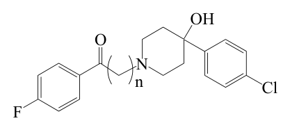

開卷有益 ／
藥師 ／ 藥理學與藥物化學 ／ 101 年第 1 次101 年第 1 次藥師藥理學與藥物化學試題與答案
這一頁是民國 101 年第 1 次藥師藥理學與藥物化學的整份歷屆試題，共 80 題，題目與標準答案出自考選部「國家考試試題及測驗式試題答案」開放資料，其中 67 題附有詳解。以下逐題列出題幹、選項與答案；要計時作答或記錄成績，請用線上練習。
考選部原始場次代碼：101030
線上作答這一科 →
全部 80 題
第 1 題
Acetaminophen 過量而產生對肝細胞的毒性，是由於下列何者所造成的？
（A） 藥物本身的分子（B） 藥物與glucuronide 結合之代謝產物（C） 藥物與sulfate 結合之代謝產物（D） 藥物氧化之中間產物答案：（D）
詳解與考點 正解：過量後代謝路徑飽和，多出來的藥物被迫轉向氧化路徑，而不是母體藥物本身作怪。Acetaminophen 主要經 glucuronidation 與 sulfation 兩條途徑代謝，這兩條路徑在治療劑量下佔絕大多數；只有少量經 CYP2E1（及 CYP1A2、CYP3A4）氧化生成反應性中間產物 NAPQI（N-acetyl-p-benzoquinone imine）。過量時 glucuronidation 與 sulfation 兩條途徑飽和，較多藥物被導向氧化路徑，NAPQI 生成增加；NAPQI 會與肝細胞內 glutathione 結合並被解毒，但 glutathione 耗竭後，NAPQI 轉而與肝細胞蛋白質共價結合，造成肝細胞壞死，故選 D。
A：藥物本身的分子在治療劑量下並無明顯肝毒性，acetaminophen 本身不是造成肝壞死的活性物種。
B：與 glucuronide 結合之代謝產物為無活性的水溶性結合物，經腎臟排除，不具肝毒性。
C：與 sulfate 結合之代謝產物同樣是無活性的解毒產物，是正常劑量下的主要代謝途徑之一，不會造成肝細胞傷害。
本題考點：acetaminophen 肝毒性機轉（NAPQI-mediated hepatotoxicity）——毒性來自氧化中間產物而非母體藥物或結合型代謝物，glutathione 耗竭是由代償轉為毒性的關鍵轉折點；N-acetylcysteine 解毒原理——補充 glutathione 前驅物以中和 NAPQI，這也是為何越早給藥效果越好。
第 2 題
下列何藥物因為首渡效應（first-pass effect）高，而不適於口服用藥？
（A） Morphine（B） Atropine（C） Propranolol（D） Benazepril答案：（A）
詳解與考點 本題經考選部公告一律給分。作答任一選項皆得分。原因是題幹把「首渡效應高」直接等同於「不適於口服」；（A）與（C）都有顯著首渡代謝，卻仍可藉劑量或劑型口服，不能由前者唯一推出後者。題幹也沒有界定何種生體可用率下降才算不適於口服，沒有一個選項能無爭議符合這個複合條件，故送分。
A：Morphine 有明顯肝臟首渡代謝，口服後的生體可用率會降低；但它仍有口服劑型，臨床上可用較高劑量或適當劑型達到療效，因此不能因首渡效應高便判定不適口服。
B：Atropine 可以經口吸收並有口服給藥方式，題幹沒有提供理由把它當作因首渡效應高而不能口服的代表。
C：Propranolol 的首渡代謝顯著，但常規治療本來就可口服。這正顯示首渡效應影響的是到達全身循環的比例，不是口服途徑的絕對禁忌。
D：Benazepril 是可口服使用的前驅藥，經吸收後轉化為活性代謝物；其設計與臨床使用都不支持「因首渡效應高而不適口服」的結論。
本題考點：首渡效應（first-pass effect）與口服生體可用率（oral bioavailability）。判斷時要先分開問「首渡代謝是否降低全身暴露量」與「能否藉劑量、劑型或前驅藥設計維持口服療效」，不能把兩者畫上等號。
第 3 題
下列有關藥物排泄之敘述，何者錯誤？
（A） 腎小管細胞上之p-glycoprotein 較選擇性將有機陽離子藥物或其代謝物分泌至尿中（B） 非解離型之弱酸藥物在近端腎小管（proximal tubule）會進行被動性再吸收回血液（C） 肝細胞上之多藥抗藥性相關蛋白第二型（MRP2）主要將藥物之glucuronide 代謝物分泌至膽汁中（D） 藥物之glucuronide 代謝物於腸內被腸內細菌水解成原藥物可能會被再吸收答案：（A）
詳解與考點 正解：判準是逐一核對每個轉運體或路徑對應的受質類別是否正確。腎小管上皮細胞主動分泌有機陽離子的轉運體主要是 organic cation transporter（OCT）與 multidrug and toxin extrusion（MATE）系統，P-glycoprotein 的受質範圍廣泛涵蓋多種親脂性中性或弱鹼性化合物，並非以有機陽離子為選擇性受質，故此敘述錯誤，選 A。
B：非解離型的弱酸藥物脂溶性較高，在近端腎小管確實會發生被動性再吸收回血液，這是腎小管重吸收的常見機轉，敘述正確。
C：MRP2（multidrug resistance-associated protein 2）位於肝細胞膽管側（apical）膜，主要負責將 glucuronide 等第二相結合代謝物分泌至膽汁中，敘述正確。
D：glucuronide 代謝物隨膽汁進入腸道後，可被腸內細菌的 β-glucuronidase 水解回原藥物，水解後的原藥物親脂性提高而可能被重新吸收，此即腸肝循環（enterohepatic circulation），敘述正確。
本題考點：腎小管有機陽離子分泌（organic cation secretion）——判準轉運體是 OCT/MATE，不是 P-glycoprotein；P-glycoprotein 受質範圍（P-gp substrate specificity）——廣泛而非侷限於陽離子；腸肝循環（enterohepatic circulation）——glucuronide 結合物經細菌水解後原藥物重新吸收，會延長藥物作用時間。
第 4 題
下列何者是β-Lactamase inhibitor，和penicillins 類藥物之併用可以防止其被分解，而增加藥效？
（A） Clavulanic acid（B） Repaglinide（C） Mefenamic acid（D） Sulindac答案：（A）
詳解與考點 正解：判準在於哪個藥物能不可逆結合 β-lactamase 活性中心，保護 β-lactam 環不被分解。Clavulanic acid 本身抗菌活性微弱，但可不可逆地與 β-lactamase 活性中心結合而使其失去活性，臨床上常與 amoxicillin 併方為 amoxicillin/clavulanate，藉此擴大對產酶菌株的涵蓋範圍，故選 A。
B：Repaglinide 為 meglitinide 類降血糖藥，作用機轉是促進胰島 β 細胞釋放 insulin，與 β-lactamase 無關。
C：Mefenamic acid 為 fenamate 類非類固醇消炎藥，抑制 cyclooxygenase 而發揮消炎鎮痛作用，與 β-lactamase 無關。
D：Sulindac 同屬非類固醇消炎藥，作用機轉同為抑制 cyclooxygenase，與 β-lactamase 抑制無關。
本題考點：β-lactamase inhibitor（clavulanic acid、sulbactam、tazobactam）——本身抗菌力弱，靠不可逆結合酶活性中心來保護 β-lactam 環不被分解；辨別關鍵在於藥物類別分類，本題其餘三個選項分屬降血糖藥與 NSAID，與抗生素增效劑機轉完全無關。
第 5 題
不同藥廠出產的同成分、同劑量、同類型的藥物，欲知其是否有相同藥效，應比較下列何種指標？
（A） 半衰期（half life）（B） 分布體積（Vd）（C） 生體可用率（bioavailability）（D） 排除速率常數（Kel）答案：（C）
詳解與考點 正解：不同廠牌學名藥藥效是否相當，看的是生體可用率而非其他藥動學參數。藥效取決於藥物實際進入體循環的量與速率，這正是 bioavailability 所量測的內容；兩產品若生體可用率相近（即生體相等，bioequivalence），才能推論其臨床療效相當，故選 C。
A：半衰期是藥物本身的藥動學性質，只要成分相同，半衰期理論上不因藥廠而異，無法用來區分不同藥廠產品的療效差異。
B：分布體積同樣是藥物固有的藥動學參數，反映藥物在體內的分布程度，不隨劑型配方或製造廠商而改變，不是比較不同廠牌藥效的指標。
D：排除速率常數描述藥物消除的速率，同樣是藥物本身的性質，不會因不同藥廠的製劑技術而有臨床意義上的差異。
本題考點：生體可用率與生體相等性（bioavailability and bioequivalence）——判準是藥物進入體循環的量與速率是否相近，這是不同廠牌學名藥能否互相替代的核心依據；半衰期、分布體積、排除速率常數屬藥物固有性質——這些參數描述藥物本身的處置行為，不受製劑差異影響，不能用來比較不同廠牌的療效。
第 6 題
下列何種藥物用於治療Clostridium difficile 引起的結腸炎？
（A） Amphotericin B（B） Clindamycin（C） Vancomycin（D） Rifampin答案：（C）
詳解與考點 正解：依感染好發於腸腔的特性，選藥要看能否在腸道局部達到高濃度而非全身吸收。口服 vancomycin 因幾乎不被腸道吸收，可在腸腔內達到高濃度直接殺滅 C. difficile，是治療此感染的傳統首選藥物之一（另一常用藥為 metronidazole），故選 C。
A：Amphotericin B 為多烯類抗黴菌藥，對細菌並無作用，與治療 C. difficile 感染無關。
B：Clindamycin 本身反而是誘發 C. difficile 相關性腹瀉的高風險抗生素之一，因其會破壞腸道正常菌叢而利於 C. difficile 增生，用它來治療該感染在方向上是矛盾的。
D：Rifampin 主要用於分枝桿菌感染（如結核病），並非治療 C. difficile 結腸炎的用藥。
本題考點：Clostridium difficile 相關性腹瀉治療（CDAD treatment）——口服 vancomycin 或 metronidazole 為主要選擇，判準是藥物需在腸腔內達到高局部濃度而非全身性抗菌；誘發 C. difficile 感染的高風險抗生素（clindamycin、fluoroquinolones、第三代 cephalosporins）——這類藥物廣泛破壞腸道菌叢平衡，用藥史本身就是重要的鑑別線索。
第 7 題
Sulfasalazine 臨床上廣泛用於治療：
（A） 急性毒漿體原蟲病（acute toxoplasmosis）（B） 瘧疾（C） 潰瘍性結腸炎（D） 發燒答案：（C）
詳解與考點 正解：Sulfasalazine 的療效來自腸道細菌分解後產生的活性代謝物，不是母體藥物本身。Sulfasalazine 在腸道細菌作用下分解為 sulfapyridine 與 5-aminosalicylic acid（5-ASA），其中 5-ASA 具局部抗發炎作用，是治療潰瘍性結腸炎的代表藥物之一，也用於類風濕性關節炎，故選 C。
A：急性毒漿體原蟲病的治療以 pyrimethamine 併 sulfadiazine 為主，與 sulfasalazine 不同。
B：瘧疾的治療用藥為 chloroquine、artemisinin 類等抗瘧藥物，sulfasalazine 並無抗瘧作用。
D：發燒屬非特異性症狀，臨床上以解熱鎮痛藥處理，sulfasalazine 並非退燒藥物。
本題考點：Sulfasalazine 適應症與代謝（sulfasalazine metabolism）——腸道細菌將其裂解為 sulfapyridine 與 5-ASA，發揮療效的是 5-ASA 的局部抗發炎作用；5-aminosalicylic acid 類藥物（mesalamine、olsalazine）——同屬發炎性腸道疾病用藥家族，機轉核心都是局部抑制腸黏膜發炎介質。
第 8 題
下列何種藥物之作用機轉不是抑制Topoisomerase II，導致DNA 股斷裂（brand breakage）的？
（A） Etoposide（B） Docetaxel（C） Moxifloxacin（D） Doxorubicin答案：（B）
詳解與考點 正解：找出作用標的不是 DNA 拓樸異構酶、而是微管的那一個。Docetaxel 屬 taxane 類抗腫瘤藥，機轉是與 tubulin 結合並穩定微管，抑制微管解聚合而阻斷細胞分裂於 M 期，與 topoisomerase 完全無關，故選 B。
A：Etoposide 為 podophyllotoxin 衍生物，機轉是抑制 topoisomerase II，使其無法完成 DNA 雙股斷裂後的再接合，造成 DNA 股斷裂累積。
C：Moxifloxacin 屬 fluoroquinolone 類，機轉是抑制細菌的 DNA gyrase 與 topoisomerase IV，這兩者是細菌型的 topoisomerase II 家族成員，同樣以誘發 DNA 股斷裂為最終結果。
D：Doxorubicin 屬 anthracycline 類抗腫瘤藥，機轉包含嵌入 DNA 並抑制 topoisomerase II，是經典的 topoisomerase II 毒物（poison）。
本題考點：Topoisomerase II 抑制劑（etoposide、doxorubicin、fluoroquinolones）——共同機轉是穩定酶與 DNA 斷裂複合體、阻止再接合，造成股斷裂累積而致細胞死亡；taxane 類藥物機轉（docetaxel、paclitaxel）——作用標的是微管而非 DNA 拓樸異構酶，判準在於受質是 tubulin 還是 DNA-topoisomerase 複合體。
第 9 題
下列何種抗生素最容易引起低前凝血素血症（hypoprothrombinemia）？
（A） Cefoperazone（B） Amikacin（C） Vancomycin（D） Tetracycline答案：（A）
詳解與考點 正解：判準要看哪個抗生素帶有會干擾 vitamin K 依賴性凝血因子合成的側鏈結構。Cefoperazone 帶有 N-methylthiotetrazole（MTT）側鏈，此側鏈會干擾 vitamin K 依賴性凝血因子（因子 II、VII、IX、X）在肝臟的 γ-羧化作用，同時也可能抑制腸道菌叢而減少 vitamin K 的合成，臨床上與此類低前凝血素血症的關聯最明確，故選 A。
B：Amikacin 為胺基醣苷類抗生素，主要毒性為腎毒性與耳毒性，與凝血功能無關。
C：Vancomycin 主要毒性關注點在腎毒性與紅人症候群（red man syndrome），並非導致低前凝血素血症的典型藥物。
D：Tetracycline 常見的問題是牙齒變色、光敏感與肝毒性，與 MTT 側鏈相關的凝血異常機轉無關。
本題考點：MTT 側鏈頭孢菌素類（cefoperazone、cefamandole、cefotetan 之低前凝血素血症）——判準是側鏈結構干擾 vitamin K 依賴性凝血因子的合成，這類藥物同時也常與飲酒後的 disulfiram 樣反應相關；不同抗生素的特徵性毒性辨識——胺基醣苷類看腎與耳、糖胜肽類看腎與皮膚反應，各有專屬的毒理特徵可資鑑別。
第 10 題
下列何者是Niacin 之主要作用機轉？
（A） 抑制膽固醇之合成（B） 抑制脂肪細胞內三酸甘油脂之分解（C） 促進高密度脂蛋白之合成（D） 促進膽酸之排除答案：（B）
詳解與考點 正解：依作用起點判斷，Niacin 從脂肪細胞的脂解開始，不是從肝臟或腸道下手。Niacin 透過活化脂肪細胞上的 GPR109A 受體，抑制荷爾蒙敏感性脂酶（hormone-sensitive lipase），減少三酸甘油脂被分解為游離脂肪酸並釋出至血液，進而降低肝臟合成 VLDL 所需的脂肪酸原料，是其調節血脂的核心機轉，故選 B。
A：抑制膽固醇合成是 HMG-CoA reductase inhibitor（statin 類）的機轉，niacin 並非透過抑制此酵素發揮作用。
C：促進高密度脂蛋白合成是 niacin 治療後可觀察到的效果之一，但這是下游結果而非其主要作用機轉本身，機轉的起點在於抑制脂肪細胞的脂解作用。
D：促進膽酸排除是 bile acid resins（如 cholestyramine）的機轉，niacin 並不透過此途徑作用。
本題考點：Niacin 降血脂機轉（GPR109A-mediated inhibition of lipolysis）——判準是先抑制脂肪細胞脂解，減少游離脂肪酸供應給肝臟合成 VLDL，HDL 上升是下游效應而非機轉起點；與其他降血脂藥物機轉的區分——statin 抑制合成酶、樹脂類促進膽酸排除、niacin 抑制脂解，三者作用位置完全不同不可混淆。
第 11 題
Cerivastatin 與下列何藥合用，產生橫紋肌溶解之危險性最高？
（A） colestipol（B） ezetimibe（C） gemfibrozil（D） niacin答案：（C）
詳解與考點 正解：交互作用機轉是答案所在，要看哪個藥物會抑制 statin 的代謝與肝臟攝取轉運體。Gemfibrozil 會抑制 statin 類藥物經 glucuronidation 途徑的代謝，同時也影響經 OATP1B1 轉運體的肝臟攝取，使 statin 血中濃度顯著上升；cerivastatin 與 gemfibrozil 併用時橫紋肌溶解風險大幅增加，這正是 cerivastatin 後來下市的主要原因之一，故選 C。
A：Colestipol 為膽酸結合樹脂，主要在腸道結合膽酸並減少其再吸收，與 statin 之間並無這種顯著的藥物動力學交互作用機轉。
B：Ezetimibe 抑制腸道膽固醇吸收，與 statin 併用雖增加降血脂效果，但並未顯示會經由抑制代謝途徑而大幅提升橫紋肌溶解風險。
D：Niacin 與 statin 併用雖也可能增加肌肉相關副作用的風險，但其風險程度不若 gemfibrozil 併用來得顯著，兩者機轉也不同。
本題考點：Statin 併用 fibrate 之橫紋肌溶解風險（statin-fibrate interaction and rhabdomyolysis）——gemfibrozil 抑制 statin glucuronidation 代謝與肝臟攝取轉運體，使血中濃度上升，風險高於其他 fibrate 類藥物；不同降血脂藥物併用風險分級——樹脂類與膽固醇吸收抑制劑與 statin 併用的交互作用機轉與程度都與 fibrate 類不同，不可一概而論。
第 12 題
Oprelvekin 用於治療：
（A） 再生不良性貧血（B） 嗜中性白血球減少症（C） 血小板減少症（D） 血紅素缺乏答案：（C）
詳解與考點 正解：Oprelvekin 的臨床角色鎖定在巨核細胞系造血，不是紅血球或顆粒球系。Oprelvekin 為重組人類 interleukin-11，可刺激骨髓中巨核細胞的成熟與血小板生成，臨床上用於預防或治療化學治療後引發的嚴重血小板減少症，故選 C。
A：再生不良性貧血的治療著重於刺激多系列造血或進行造血幹細胞移植，並非 interleukin-11 的主要適應症。
B：嗜中性白血球減少症的治療用藥是顆粒球群落刺激因子（G-CSF，如 filgrastim），作用標的是骨髓的顆粒球前驅細胞而非巨核細胞。
D：血紅素缺乏（貧血）的治療多使用紅血球生成素（erythropoietin）刺激紅血球系造血，與巨核細胞系的 interleukin-11 作用路徑不同。
本題考點：Oprelvekin（interleukin-11）之造血刺激作用——專一刺激巨核細胞成熟以提升血小板數量，用於化療後血小板減少症；不同造血生長因子的系別專一性（G-CSF 對顆粒球、EPO 對紅血球、IL-11 對巨核細胞）——判準是先確認低下的是哪一系血球，再對應到專一刺激該系的生長因子。
第 13 題
下列何者是目前用在預防新生兒（特別是早產兒）因維生素K 缺乏引起的出血疾病？
（A） Vitamin K1（B） Vitamin K2（C） Vitamin K3（D） Vitamin K4答案：（A）
詳解與考點 正解：哪個型式的維生素 K 兼具天然來源與完整的新生兒安全性資料，是本題判準。新生兒因腸道菌叢尚未建立、肝臟合成凝血因子功能未成熟，容易發生維生素 K 缺乏性出血；臨床上以 Vitamin K1（phytonadione）肌肉注射作為常規預防措施，因其為天然形式且安全性資料完整，故選 A。
B：Vitamin K2（menaquinone）為腸道菌叢合成的形式，新生兒腸道菌叢尚未建立完全，且臨床預防用藥並非以此形式給予。
C：Vitamin K3（menadione）為合成前驅物，因可能引發新生兒溶血性貧血與高膽紅素血症等安全疑慮，臨床上已不用於新生兒。
D：Vitamin K4 並非臨床常規用於新生兒出血預防的形式。
本題考點：新生兒維生素 K 缺乏性出血預防（vitamin K deficiency bleeding of the newborn）——標準做法是出生後常規注射 Vitamin K1，判準在於天然形式的安全性與效力皆確立；Vitamin K3 於新生兒之禁忌——因增加溶血與核黃疸風險而不適用，這是選項間安全性差異的關鍵。
第 14 題
棉子油酚（Gossypol）有下列何種作用？
（A） 降血糖（B） 降血壓（C） 消毒（D） 男性避孕答案：（D）
詳解與考點 正解：棉子油酚的藥理意義集中在男性生殖系統，不在代謝或心血管路徑。Gossypol 是自棉花籽提煉出的多酚類化合物，作用於睪丸生殖細胞，可抑制精子的生成與活動力，曾在部分地區作為男性口服避孕藥進行研究與應用，故選 D。
A：降血糖並非 gossypol 已知的藥理作用，其主要作用標的是生殖系統而非糖代謝。
B：降血壓同樣不是其已知作用，gossypol 未見於降血壓藥物之列。
C：消毒作用與 gossypol 的生殖毒性機轉無關，其臨床意義集中在對男性生殖細胞的抑制作用。
本題考點：Gossypol 之男性抗生育作用（male antifertility agent）——機轉為抑制精子生成與活動力，是少數曾被研究作為男性口服避孕藥的天然化合物之一；使用限制——因低血鉀等副作用及不可逆性疑慮，臨床應用受到相當限制。
第 15 題
Finasteride 之用途為何？
（A） 抗男性攝護腺增生（B） 抗不孕症（C） 抗糖尿病（D） 抗消化性潰瘍答案：（A）
詳解與考點 正解：阻斷 testosterone 轉為 DHT 這一步，是攝護腺增生刺激來源減少的關鍵。Finasteride 為 5α-reductase 抑制劑，可阻斷 testosterone 轉化為活性更強的 dihydrotestosterone（DHT），減少攝護腺組織增生的刺激來源，臨床用於治療良性攝護腺肥大，低劑量亦用於雄性禿，故選 A。
B：抗不孕症的治療多針對排卵誘導或精蟲品質，finasteride 降低 DHT 反而與男性生殖功能的正向治療方向不同，並非其適應症。
C：抗糖尿病藥物作用於血糖調節路徑，與 5α-reductase 抑制無關。
D：抗消化性潰瘍藥物作用於胃酸分泌或黏膜保護機轉，與 finasteride 的荷爾蒙代謝抑制機轉完全無關。
本題考點：5α-reductase 抑制劑（finasteride、dutasteride）——機轉為阻斷 testosterone 轉為 DHT，判準是攝護腺與毛囊組織對 DHT 的敏感性遠高於 testosterone 本身；良性攝護腺增生治療分類——5α-reductase 抑制劑與 α1-adrenergic 拮抗劑是兩條不同機轉的主力藥物，前者縮小腺體體積、後者放鬆平滑肌改善排尿症狀。
第 16 題
下列何者為sulfonylurea 之作用機轉？
（A） 抑制Glucose 由腸胃吸收（B） 促進Insulin 釋放（C） 促進組織分解glucose（D） 使glucose 轉變為乳糖答案：（B）
詳解與考點 正解：Sulfonylurea 的作用起點在胰島 β 細胞的鉀通道，不在腸道或周邊組織。Sulfonylurea 類藥物與胰島 β 細胞膜上的 K-ATP 通道上之 sulfonylurea receptor 結合，關閉此鉀離子通道，造成細胞膜去極化並開啟電壓依賴性鈣離子通道，鈣離子內流促使含 insulin 的分泌顆粒胞吐，直接促進 insulin 釋放，故選 B。
A：抑制 glucose 由腸胃吸收是 α-glucosidase inhibitor（如 acarbose）的機轉，並非 sulfonylurea 的作用方式。
C：促進組織分解 glucose 並非 sulfonylurea 的直接機轉，其作用起點在胰島細胞的 insulin 分泌，而非周邊組織的糖代謝酵素。
D：使 glucose 轉變為乳糖在生理上並非降血糖藥物的作用方向，此敘述本身不符合藥理邏輯。
本題考點：Sulfonylurea 促泌機轉（K-ATP channel closure and insulin secretion）——判準是藥物直接作用於胰島 β 細胞的鉀通道而非周邊組織的糖代謝路徑；與 α-glucosidase inhibitor 的區分——後者作用於腸道吸收端，兩類藥物的作用位置與適用族群（是否仍有胰島功能）需分別考量。
第 17 題
Glargine 之用途為：
（A） 抗潰瘍（B） 抗高血壓（C） 抗糖尿病（D） 抗心率不整答案：（C）
詳解與考點 正解：依藥物類別判斷，Glargine 屬於長效胰島素類似物，其餘三個選項都不是降血糖藥物。Insulin glargine 為長效人類胰島素類似物，經皮下注射後在中性 pH 下形成微沉澱緩慢釋放，提供近似基礎胰島素分泌的平穩作用，臨床用於糖尿病患者的基礎胰島素治療，故選 C。
A：抗潰瘍藥物作用於胃酸分泌或黏膜保護路徑，與胰島素類似物的降血糖機轉無關。
B：抗高血壓藥物作用於血管張力或體液調節路徑，glargine 並無此類作用。
D：抗心率不整藥物作用於心肌電生理，與胰島素的代謝調節作用機轉完全不同。
本題考點：長效胰島素類似物（insulin glargine）——藉由分子結構改變使其在皮下注射部位緩慢釋放，提供平穩的基礎胰島素濃度，判準在於其藥效曲線平坦、無明顯尖峰，適合作為基礎胰島素而非餐時胰島素使用。
第 18 題
那一種藥物具選擇性β1-adrenergic receptor阻斷作用，且最易受紅血球之脂酵素（esterase）分解？
（A） Atenolol（B） Esmolol（C） Betaxolol（D） Carteolol答案：（B）
詳解與考點 正解：從代謝路徑判斷，答案要有酯鍵結構才可能被紅血球內的酵素快速水解。Esmolol 分子結構帶有酯鍵，可迅速被紅血球胞質內的 esterase 水解代謝，半衰期極短（約數分鐘），因此常用於需快速起效與快速消退的急性情境，如手術中或急性心律不整的短期控制，同時對 β1 受體具選擇性，故選 B。
A：Atenolol 為選擇性 β1 阻斷劑，但主要經腎臟排除，並非以紅血球 esterase 快速代謝為其藥動學特徵。
C：Betaxolol 同為選擇性 β1 阻斷劑，主要經肝臟代謝，半衰期相對較長，不具 esmolol 那種被 esterase 快速水解的特性。
D：Carteolol 為非選擇性 β 阻斷劑，且不具酯鍵結構供紅血球酵素分解，與題目描述不符。
本題考點：Esmolol 之超短效藥動學特徵（ultra-short-acting β1 blocker）——判準是酯鍵結構使其可被紅血球 esterase 快速水解，這是與其他 β1 選擇性阻斷劑最主要的區分點；選擇性 β1 阻斷劑家族（atenolol、betaxolol、esmolol）——選擇性相近但代謝路徑與作用時間差異極大，臨床選藥需依起效與消退速度的需求區分。
第 19 題
那一種利尿劑對肝硬化（hepatic cirrhosis）是最佳選擇？
（A） Hydrochlorothiazide（B） Amiloride（C） Furosemide（D） Spironolactone答案：（D）
詳解與考點 正解：病理機轉是判準——肝硬化腹水的核心是續發性高醛固酮血症。肝硬化病人常因肝功能不良活化 renin-angiotensin-aldosterone 系統，導致續發性高醛固酮血症，造成鈉水滯留與腹水；Spironolactone 為 aldosterone 拮抗劑，直接針對此病理機轉發揮利尿與抗鈉滯留作用，是肝硬化腹水治療的首選利尿劑，故選 D。
A：Hydrochlorothiazide 作用於遠曲小管抑制鈉氯共同運輸，對肝硬化續發性高醛固酮血症的機轉並無針對性，且可能加重低血鉀。
B：Amiloride 作用於集尿管鈉通道，雖同屬保鉀利尿劑，但其利尿效力與臨床證據皆不如 spironolactone 在肝硬化腹水治療中的地位。
C：Furosemide 為強效環利尿劑，單獨使用於肝硬化病人容易造成電解質失衡與腎前氮血症，臨床上多與 spironolactone 併用而非單獨作為首選。
本題考點：肝硬化腹水之利尿劑選擇（diuretic therapy in hepatic cirrhosis and ascites）——判準是病理機轉為續發性高醛固酮血症，故 aldosterone 拮抗劑為針對病因的首選，環利尿劑多作為併用藥物；保鉀利尿劑之機轉區分（spironolactone 拮抗受體 vs. amiloride 阻斷鈉通道）——作用位置不同，臨床適應症的優先順序也隨之不同。
第 20 題
下列那一種藥物最適合以注射方式抑制因renin 過度釋放所引起之急性高血壓？
（A） Benazepril（B） Fosinopril（C） Enalaprilat（D） Prazosin答案：（C）
詳解與考點 正解：判準有兩層——機轉要對應 renin 過度釋放，劑型要能靜脈注射快速起效。Enalaprilat 為 enalapril 的活性代謝物，本身即具活性、不需經肝臟酯解活化，可製成注射劑型供靜脈給藥，用於需要快速控制的急性高血壓情境，透過抑制 angiotensin-converting enzyme 阻斷 renin-angiotensin 系統，故選 C。
A：Benazepril 為 prodrug，須經肝臟水解為 benazeprilat 才具活性，僅有口服劑型，起效速度不適合急性靜脈給藥的需求。
B：Fosinopril 同樣是需經肝臟或腸道酯解活化的 prodrug，僅供口服使用，無法用於需要快速注射起效的急性高血壓處置。
D：Prazosin 為 α1-adrenergic 拮抗劑，機轉是放鬆血管平滑肌而非抑制 renin-angiotensin 系統，且僅有口服劑型，與題目所述機轉及給藥途徑皆不符。
本題考點：Enalaprilat 之注射劑型與 prodrug 辨識（active metabolite vs. prodrug ACE inhibitors）——判準是該藥是否需經肝臟活化，enalaprilat 本身即為活性型故可製成注射劑；急性高血壓之藥物選擇——需同時考慮作用機轉是否對應病因（renin 過度釋放）與劑型是否支援快速給藥兩個條件。
第 21 題
有一心絞痛病人在服用硝基化合物時，若與下列那一種藥物併用最會增強硝基化合物而增加c-GMP 之效果？
（A） Sildenafil（B） Atenolol（C） Losartan（D） Captopril答案：（A）
詳解與考點 正解：找出同樣作用在 NO-cGMP 路徑上的藥物，就是本題判準。硝基化合物經代謝釋出 nitric oxide，活化 guanylate cyclase 使 cGMP 生成增加；Sildenafil 為 phosphodiesterase type 5 抑制劑，阻斷 cGMP 的分解，兩者併用會使 cGMP 濃度過度堆積，導致血管平滑肌過度舒張與嚴重低血壓，臨床上為明確禁忌併用，故選 A。
B：Atenolol 為 β1-adrenergic 拮抗劑，作用機轉與 cGMP 訊息傳遞路徑無關，不會增強硝基化合物對 cGMP 的效果。
C：Losartan 為 angiotensin II receptor 拮抗劑，作用於 renin-angiotensin 系統，與 nitric oxide-cGMP 路徑無直接交互作用。
D：Captopril 為 angiotensin-converting enzyme 抑制劑，同樣作用於 renin-angiotensin 系統，與 phosphodiesterase 抑制無關，不會造成 cGMP 蓄積。
本題考點：PDE5 抑制劑與硝酸酯類併用禁忌（sildenafil-nitrate contraindication）——判準是兩者共同作用在同一條 NO-cGMP 路徑上，一個促進生成、一個阻斷分解，疊加效應可致嚴重低血壓；β 阻斷劑與 renin-angiotensin 系統藥物之作用路徑——與 NO-cGMP 路徑各自獨立，不構成此類交互作用。
第 22 題
那一種利尿劑投與時會使血中之氨（ammonia）濃度增加，因此易使肝硬化病人引起肝性腦昏迷 （Hepatic encephalopathy）？
（A） Mannitol（B） Acetazolamide（C） Isosorbide（D） Spironolactone答案：（B）
第 23 題
那一種利尿劑同時用在急性高山症（Acute mountain sickness）病人？
（A） Ethacrynic acid（B） Dichlorphenamide（C） Amiloride（D） Triamterene答案：（B）
詳解與考點 正解：找出同屬 carbonic anhydrase inhibitor、能誘發代償性換氣增加的藥物，就是答案。Dichlorphenamide 與 acetazolamide 同屬 carbonic anhydrase inhibitor，可誘發輕度代謝性酸血症，代償性刺激呼吸中樞增加換氣量，改善高海拔環境下的低血氧與呼吸性鹼血症，因而具有預防與緩解急性高山症症狀的用途，故選 B。
A：Ethacrynic acid 為環利尿劑，作用於亨利氏環升支抑制鈉氯鉀共同運輸，其利尿機轉與呼吸中樞的酸鹼調節無關，並非高山症用藥。
C：Amiloride 為保鉀利尿劑，作用於集尿管鈉通道，同樣不具備碳酸酐酶抑制作用，不用於高山症的預防或治療。
D：Triamterene 同為保鉀利尿劑，作用機轉與 amiloride 類似，與碳酸酐酶抑制及呼吸驅動力的調節無關。
本題考點：Carbonic anhydrase inhibitor 於急性高山症之應用（altitude sickness prophylaxis）——判準是此類藥物誘發的代謝性酸血症可代償性刺激呼吸中樞，改善高海拔換氣不足；本題涉及較細節的藥物歸類比較，選項間需先確認何者屬碳酸酐酶抑制劑家族。
第 24 題
有一曾患有心肌梗塞之心臟病人，若要長期治療以減少病人心室心律不整，增加存活率，則下列那 一種藥物是最正確的選擇？
（A） Flecainide（B） Lidocaine（C） Amiodarone（D） Quinidine答案：（C）
詳解與考點 正解：依安全性證據選藥，缺血性心臟病病人長期用藥要避開會增加死亡率的抗心律不整藥。Amiodarone 屬 class III 抗心律不整藥，雖具多重離子通道作用，但其致心律不整（proarrhythmic）風險相對其他抗心律不整藥物低，長期使用於結構性心臟病或缺血性心臟病患者的安全性資料較完整，因此是此類病人長期抑制心室心律不整的較適合選擇，故選 C。
A：Flecainide 屬 class IC 抗心律不整藥，在有結構性心臟病或缺血性心臟病病史的病人身上使用，已知會增加致死性心律不整與死亡率，不適合此類長期治療。
B：Lidocaine 屬 class IB 抗心律不整藥，僅供靜脈注射使用於急性心室心律不整的處理，並無口服劑型可供長期治療。
D：Quinidine 屬 class IA 抗心律不整藥，同樣在結構性心臟病病人身上有增加死亡率的疑慮，不適合作為此類病人的長期選擇。
本題考點：缺血性心臟病病人抗心律不整藥物選擇（post-MI antiarrhythmic safety）——判準是該類病人使用 class IC 與部分 class IA 藥物會增加死亡率，amiodarone 相對安全性較佳；Lidocaine 僅供急性靜脈給藥——劑型限制使其無法用於長期治療。
第 25 題
下列何者不是神經節阻斷劑（ganglion-blocking agent）之副作用？
（A） 直立性低血壓（orthostatic hypotension）（B） 尿液滯留（urinary retention）（C） 縮瞳（miosis）（D） 便祕（constipation）答案：（C）
詳解與考點 正解：神經節阻斷劑失去副交感張力後，眼部表現的是瞳孔放大而非縮瞳。神經節阻斷劑同時阻斷交感與副交感神經節的傳遞，其中對副交感神經張力較高的器官（如眼睛、腸道、膀胱）影響最明顯；眼部因失去副交感的縮瞳張力，會表現為瞳孔放大（mydriasis）而非縮瞳，故縮瞳並非其副作用，選 C。
A：直立性低血壓是神經節阻斷劑最典型的副作用之一，因阻斷交感神經節後，站立時代償性血管收縮反射喪失所致。
B：尿液滯留是因阻斷副交感神經節後，膀胱逼尿肌收縮力下降所造成，屬常見副作用。
D：便祕是因阻斷副交感神經節後，腸胃道蠕動減少所致，同樣屬常見副作用。
本題考點：神經節阻斷劑之副作用譜（ganglion-blocking agent side effects）——判準是同時失去交感與副交感節後神經傳遞，副交感張力較高的器官會出現功能低下的表現；眼部反應方向——失去縮瞳的副交感張力後應是瞳孔放大而非縮小，方向判斷是本題的關鍵誘答點。
第 26 題
下列何種擬交感神經作用劑（sympathomimetics）可用於治療注意力不能集中之過動症狀（attention- deficit hyperactivity disorder）？
（A） Metaproterenol（B） Methylphenidate（C） Methyldopa（D） Phenylephrine答案：（B）
詳解與考點 正解：判準是找出能抑制中樞多巴胺與正腎上腺素再回收、提升前額葉皮質功能的藥物。Methylphenidate 為中樞興奮劑，機轉是抑制多巴胺與正腎上腺素的再回收，提升前額葉皮質區的多巴胺與正腎上腺素濃度，改善過動症病人的注意力與衝動控制，是治療此症的代表用藥，故選 B。
A：Metaproterenol 為 β2-adrenergic 促效劑，主要用於支氣管擴張治療氣喘，與中樞注意力調節無關。
C：Methyldopa 為中樞性 α2-adrenergic 促效劑，臨床用於降血壓，與過動症治療無關。
D：Phenylephrine 為 α1-adrenergic 促效劑，主要用於升高血壓或作為鼻黏膜去充血劑，不具治療過動症的作用。
本題考點：Methylphenidate 之中樞興奮作用機轉（catecholamine reuptake inhibition in ADHD）——判準是抑制多巴胺與正腎上腺素再回收，作用位置在中樞而非周邊；擬交感神經作用劑之分類辨識——需依其對 α、β 受體的選擇性與作用部位（中樞或周邊）區分適應症。
第 27 題
下列何種擬交感神經作用劑（sympathomimetics）常用於處理休克（shock）症狀之病人？
（A） Terbutaline（B） Dopamine（C） Methoxamine（D） Methyldopa答案：（B）
詳解與考點 正解：Dopamine 的劑量與受體對應關係，正是它成為休克首選藥物的原因。Dopamine 依劑量不同可分別活化 dopaminergic、β1-adrenergic 與 α1-adrenergic 受體，低劑量增加腎臟血流、中劑量增強心臟收縮力、高劑量則造成血管收縮，臨床上可依休克病人的血行動力學狀態調整劑量，是處理休克時常用的升壓與強心藥物，故選 B。
A：Terbutaline 為選擇性 β2-adrenergic 促效劑，主要用於支氣管擴張與抑制子宮收縮，並非休克處理的常用藥物。
C：Methoxamine 為選擇性 α1-adrenergic 促效劑，雖可升高血壓，但缺乏強心作用，臨床應用不若 dopamine 廣泛且可調控性高。
D：Methyldopa 為降血壓藥物，作用方向與休克時需要升壓的治療目標相反，不適用於此情境。
本題考點：Dopamine 之劑量依存性受體活化（dose-dependent receptor selectivity）——判準是低、中、高劑量分別偏向 dopaminergic、β1、α1 受體，臨床可依此調整休克病人的治療策略；休克處理用藥之機轉需求——須兼顧升壓與維持器官灌流兩個面向，這是 dopamine 常被選用的原因。
第 28 題
下列有關Ondansetron 之敘述，何項錯誤？
（A） 是一血清素5-HT3受器拮抗劑（B） 用於治療癌症化學療法引致之嘔吐（C） 用於預防全身輻射療法引致之嘔吐（D） 用於預防暈車引致之嘔吐答案：（D）
詳解與考點 正解：暈車嘔吐走的是前庭系統路徑，不是 5-HT3 路徑，這是辨誤關鍵。Ondansetron 為 serotonin 5-HT3 受器拮抗劑，主要用於預防與治療癌症化學治療、放射治療引起的噁心嘔吐；暈車引起的嘔吐主要涉及前庭系統與組織胺、乙醯膽鹼路徑，並非 5-HT3 路徑主導，臨床上並不使用 ondansetron 來預防暈車，故此敘述錯誤，選 D。
A：Ondansetron 確實是血清素 5-HT3 受器拮抗劑，此為其正確的分類。
B：用於治療癌症化學療法引致之嘔吐是其核心適應症，敘述正確。
C：全身輻射療法同樣會誘發嚴重噁心嘔吐，ondansetron 亦用於此情境的預防，敘述正確。
本題考點：5-HT3 受器拮抗劑之適應症範圍（ondansetron indications）——核心適應症限於化療、放療與術後噁心嘔吐，判準是嘔吐的誘發路徑是否經由化學受器觸發區的 5-HT3 訊號；暈車機轉與治療（motion sickness pathway）——主要經前庭核的組織胺與乙醯膽鹼路徑，用藥以抗組織胺與抗膽鹼藥物為主，與 5-HT3 拮抗劑機轉不同。
第 29 題
Tegaserod 在臨床上可用於緩解irritable bowel syndrome，其主要是作用在那一個受體上？
（A） Muscarinic M1受體（B） Histamine H2受體（C） Dopamine D2受體（D） Serotonin 5-HT4受體答案：（D）
詳解與考點 正解：Tegaserod 的促動力效果來自活化腸道肌間神經叢上的 5-HT4 受體。Tegaserod 為 serotonin 5-HT4 受體部分促效劑，活化腸道肌間神經叢的 5-HT4 受體可促進腸道蠕動與分泌，改善以便祕為主的大腸激躁症症狀，故選 D。
A：Muscarinic M1 受體與胃酸分泌及中樞認知功能較相關，並非 tegaserod 的主要作用標的。
B：Histamine H2 受體主要調控胃酸分泌，屬制酸藥物的作用標的，與腸道蠕動的促進機轉不同。
C：Dopamine D2 受體與噁心嘔吐及腸胃蠕動雖有部分關聯（如 metoclopramide 之機轉），但並非 tegaserod 所作用的受體。
本題考點：Tegaserod 之促動力機轉（5-HT4 partial agonist for prokinetic effect）——判準是此類藥物透過活化腸道神經叢的 5-HT4 受體促進蠕動，與制酸或止吐藥物所作用的受體家族不同；不同胃腸用藥的受體標的辨識——需先確認藥物的治療目的（促蠕動、止吐、制酸）才能對應到正確的受體家族。
第 30 題
下列有關Aspirin 的敘述何者錯誤？
（A） 其解熱的作用是經由抑制中樞COX 及interleukin-1 的結果（B） 鹼性尿可以增加其游離水楊酸（C） 長期服用之患者開刀前不必停藥，但應減低麻醉劑的用量（D） 本品具有抗炎作用答案：（C）
詳解與考點 正解：判準是 aspirin 對血小板 COX 的抑制是不可逆的，效果會持續到新血小板生成為止。Aspirin 會不可逆地抑制血小板的 cyclooxygenase，其抗血小板作用會持續至新的血小板生成為止（約數天至一週），長期服用者若需接受手術，考量出血風險，臨床上通常建議於術前一段時間停藥，並非「不必停藥」，故此敘述錯誤，選 C。
A：Aspirin 的解熱作用機轉包含抑制中樞下視丘的 COX 活性，並減少 interleukin-1 等致熱物質的作用，此敘述符合其解熱機轉。
B：水楊酸為弱酸，鹼性尿液會使其解離型比例增加而減少腎小管再吸收，進而增加游離水楊酸的排除，此敘述正確，也是鹼化尿液可用於水楊酸中毒治療的原理。
D：Aspirin 具有抑制 COX、減少前列腺素合成的消炎作用，此敘述正確。
本題考點：Aspirin 之不可逆血小板抑制與手術風險（irreversible platelet COX inhibition）——判準是此不可逆性使抗血小板效果持續整個血小板生命週期，術前需評估停藥時機以降低出血風險；水楊酸中毒之尿液鹼化治療（urinary alkalinization for salicylate toxicity）——利用弱酸藥物在鹼性環境下解離度增加、不易被再吸收的原理加速排除。
第 31 題
下列何種藥物臨床上用於治療偏頭痛（migraine）？
（A） Diphenylhydantoin（B） Sumatriptan（C） Bradykinin（D） Cyproheptadine答案：（B）
詳解與考點 正解：偏頭痛治療的機轉需求，是要能同時收縮腦血管並抑制三叉神經血管系統的發炎介質。Sumatriptan 為 serotonin 5-HT1B/1D 受體促效劑，可使腦血管收縮並抑制三叉神經末梢釋放發炎介質，是治療急性偏頭痛發作的代表藥物，故選 B。
A：Diphenylhydantoin（phenytoin）為抗癲癇藥物，作用機轉是阻斷電壓依賴性鈉離子通道，與偏頭痛的血管與神經發炎機轉無關。
C：Bradykinin 為內生性發炎介質，本身會誘發疼痛與血管擴張，並非治療用藥。
D：Cyproheptadine 為抗組織胺兼具抗血清素作用，臨床上用於偏頭痛的預防而非急性發作治療，與 sumatriptan 針對急性發作的用途不同。
本題考點：Triptan 類藥物之偏頭痛急性治療機轉（5-HT1B/1D agonism）——判準是此類藥物同時收縮擴張的腦血管並抑制三叉神經血管系統的發炎介質釋放；偏頭痛預防用藥與急性治療用藥之區分——cyproheptadine 等抗血清素藥物多用於預防，triptan 類則用於發作時的急性緩解。
第 32 題
下列有關三環類治療憂鬱症藥物的敘述，何者錯誤？
（A） 三環類治療憂鬱症藥物大多具有高度的首渡效應（First pass effect）（B） 大部分的三環類治療憂鬱症藥物都具有阻斷多巴胺（Dopamine）再回收的作用（C） 使用三環類治療憂鬱症藥物會發生直立性低血壓（Orthostatic hypotension）的副作用（D） 三環類治療憂鬱症藥物通常也可以用來改善小孩半夜遺尿（Enuresis）的現象答案：（B）
第 33 題
下列那一種鹽類具有治療躁鬱症（Bipolar affective disorder）的藥理作用？
（A） Calcium phosphate（B） Magnesium chloride（C） Lithium carbonate（D） Sodium chloride答案：（C）
詳解與考點 正解：情緒穩定的療效來自鋰離子對細胞內訊息傳遞路徑的長期調節，其餘三個選項只是一般礦物鹽。Lithium carbonate 所含的鋰離子可調節神經細胞內的訊息傳遞路徑，包括影響 inositol 磷酸酶系統與多種神經傳遞物質的釋放，臨床上是治療躁鬱症、特別是急性躁期與長期預防復發的代表藥物，故選 C。
A：Calcium phosphate 主要用於補充鈣質或作為制酸劑成分，並無治療情緒疾患的藥理作用。
B：Magnesium chloride 主要用於補充鎂離子或作為瀉劑成分，與躁鬱症治療機轉無關。
D：Sodium chloride 為生理食鹽水的成分，用於補液與電解質補充，並無情緒穩定作用。
本題考點：Lithium 之情緒穩定機轉（mood-stabilizing effect of lithium）——判準是鋰離子透過調節細胞內訊息傳遞路徑發揮長期穩定情緒的作用，治療濃度與中毒濃度範圍狹窄，需監測血中濃度；其餘選項皆為一般礦物鹽類——不具備調節神經傳遞的情緒穩定作用，僅具補充電解質或制酸等一般用途。
第 34 題
下列有關組織胺的敘述，何者錯誤？
（A） 存在嗜伊紅性細胞內（B） 結合型的組織胺不具生物活性（C） 肥大細胞受刺激時可釋放出組織胺（D） 存在胃底之腸嗜鉻樣細胞（enterochromaffin-like cell）答案：（A）
詳解與考點 正解：依儲存部位判斷，組織胺存在肥大細胞與嗜鹼性球，不在嗜伊紅性細胞。組織胺主要儲存於肥大細胞與嗜鹼性球（basophil）的顆粒中，並非儲存於嗜伊紅性細胞（eosinophil）內；嗜伊紅性細胞在過敏反應中扮演的角色是釋放可分解組織胺的酵素、調節發炎反應，而非組織胺的主要儲存場所，故此敘述錯誤，選 A。
B：組織胺在細胞顆粒內多與 heparin 等帶負電荷的大分子以結合型態儲存，此結合型態不具生物活性，須釋放後才具作用，敘述正確。
C：肥大細胞受抗原刺激或去顆粒化刺激時，會釋放儲存的組織胺，此為過敏反應的核心機轉之一，敘述正確。
D：胃底部的腸嗜鉻樣細胞（enterochromaffin-like cell）受 gastrin 刺激後會釋放組織胺，進而活化壁細胞上的 H2 受體促進胃酸分泌，敘述正確。
本題考點：組織胺之儲存部位（histamine storage sites）——判準是主要儲存於肥大細胞與嗜鹼性球，而非嗜伊紅性細胞，這是本題最主要的誘答辨析點；胃酸分泌之組織胺路徑（ECL cell-mediated histamine release）——理解 gastrin 經由 ECL 細胞釋放組織胺、再活化壁細胞 H2 受體這條路徑，是制酸藥物機轉的基礎。
第 35 題
下列何者並非動情素（estrogen）對脂質代謝之影響？
（A） 降低血中三酸甘油脂（B） 降低血中總膽固醇量（C） 降低血中低密度脂蛋白（D） 增加血中高密度脂蛋白答案：（A）
詳解與考點 正解：動情素對四項脂質指標的實際作用方向是判準，其中三酸甘油脂是唯一被它升高的一項。動情素會促進肝臟合成極低密度脂蛋白，臨床觀察上動情素治療反而會使血中三酸甘油脂濃度上升，並非降低，故此敘述不符合動情素的實際作用方向，選 A。
B：動情素會促進低密度脂蛋白受體的表現，加速其代謝清除，進而降低血中總膽固醇量，此為其正確的脂質調節作用之一。
C：動情素同樣透過促進低密度脂蛋白受體活性而降低血中低密度脂蛋白濃度，此為正確敘述。
D：動情素會促進 apolipoprotein A-I 的合成，進而增加血中高密度脂蛋白濃度，此為正確敘述。
本題考點：動情素之脂質代謝調節作用（estrogen effects on lipid profile）——判準是動情素降低總膽固醇與低密度脂蛋白、升高高密度脂蛋白，但同時會升高三酸甘油脂，方向與其他三項相反，是本題的關鍵誘答；此效應也是動情素相關治療需留意高三酸甘油脂血症病人風險的原因。
第 36 題
下列有關鎮靜-安眠（sedative-hypnotic）藥物作用之敘述，何者有誤？
（A） Benzodiazepines 類藥物較Barbiturates 類藥物不易引起呼吸抑制的副作用（B） 長效型藥物在停藥後所產生的禁斷現象（withdrawal symptoms）通常較短效型藥物嚴重（C） Barbiturates類藥物會直接打開GABAA受體氯離子管道，但Benzodiazepines類藥物則否（D） 鎮靜-安眠藥物與酒精會產生交互依賴性（cross-dependence）的現象答案：（B）
詳解與考點 正解：戒斷症狀的嚴重度跟著半衰期走——短效型通常比長效型來得快且劇烈，方向與敘述相反。短效型鎮靜安眠藥物因血中濃度下降較快，停藥後戒斷症狀通常較快出現且較為劇烈；長效型藥物因消除較緩慢，血中濃度是逐漸下降，戒斷症狀相對較輕微且較晚出現，因此「長效型藥物之禁斷現象通常較短效型藥物嚴重」此敘述方向相反，錯誤，選 B。
A：Benzodiazepines 需要 GABAA 受體上已有 GABA 結合才能增強氯離子通道開啟頻率，其呼吸抑制作用天花板效應較明顯，確實較 barbiturates 類藥物不易引起嚴重呼吸抑制，敘述正確。
C：Barbiturates 類藥物在較高濃度時可不需 GABA 存在即直接打開氯離子通道，而 benzodiazepines 類藥物僅能增強 GABA 的作用、無法直接打開通道，此為兩者機轉上的關鍵差異，敘述正確。
D：鎮靜安眠藥物與酒精皆作用於 GABAA 受體相關路徑，兩者之間確實存在交互依賴性，敘述正確。
本題考點：鎮靜安眠藥物戒斷症狀之時效性（withdrawal severity and drug half-life）——判準是短效型藥物血中濃度下降快，戒斷症狀出現得快且較劇烈，長效型則相對緩和，此方向常是誘答重點；Barbiturates 與 Benzodiazepines 機轉差異——前者可直接打開氯離子通道、後者僅增強 GABA 作用，此差異也解釋了兩者呼吸抑制風險的不同。
第 37 題
下列何種藥物會引起橘紅色的尿液？
（A） Cyclophosphamide（B） Hydroxyurea（C） Daunorubicin（D） Mitomycin答案：（C）
詳解與考點 正解：橘紅色尿液來自 anthracycline 類藥物本身的色素，是良性的外觀變化不是血尿。Daunorubicin 屬 anthracycline 類抗腫瘤藥物，其本身分子帶有紅色色素，經腎臟排除時會使尿液呈現橘紅色，這是臨床上常提醒病人的良性外觀變化，並非血尿，故選 C。
A：Cyclophosphamide 常見的泌尿道相關副作用是出血性膀胱炎，其代謝物 acrolein 對膀胱黏膜具刺激性，並非造成尿液本身呈橘紅色的機轉。
B：Hydroxyurea 主要副作用為骨髓抑制，並無使尿液變色的典型作用。
D：Mitomycin 主要毒性包括骨髓抑制與肺毒性，並非以尿液變色為特徵性表現。
本題考點：Anthracycline 類藥物之尿液變色（anthracycline-induced red-orange urine discoloration）——判準是藥物分子本身帶有色素、經腎排除後使尿液著色，屬預期的良性現象而非血尿，臨床衛教上須與出血性膀胱炎的血尿做區分；Cyclophosphamide 之出血性膀胱炎——機轉來自代謝物 acrolein 刺激膀胱黏膜，性質與單純色素排除不同。
第 38 題
下列有關亨庭頓手足舞蹈症（Huntington’s disease）的敘述，何者錯誤？
（A） 是一種遺傳性的退化性中樞疾病（B） 係基底神經核中多巴胺、乙醯膽鹼及GABA 三種神經傳遞物質的不平衡所產生的中樞疾病（C） 抑制多巴胺神經傳遞系統的藥物可以緩解亨庭頓手足舞蹈症的臨床病症（D） Tetrabenazine 的主要作用係透過直接阻斷GABA 抑制性的神經傳遞作用，進而產生緩解亨庭頓手 足舞蹈症的臨床病症作用答案：（D）
詳解與考點 正解：Tetrabenazine 的機轉是抑制 VMAT2、減少單胺類傳遞物質釋放，不是直接作用於 GABA，這是辨誤關鍵。Tetrabenazine 的主要作用機轉是抑制 vesicular monoamine transporter type 2（VMAT2），減少多巴胺等單胺類神經傳遞物質被打包進入突觸小泡並釋放，藉此降低基底神經核多巴胺傳遞的過度活性，而非直接阻斷 GABA 抑制性神經傳遞作用，故此敘述錯誤，選 D。
A：亨庭頓手足舞蹈症確實為體染色體顯性遺傳的退化性中樞神經疾病，敘述正確。
B：此病的病理生理涉及基底神經核內多巴胺、乙醯膽鹼與 GABA 三種神經傳遞物質之間的失衡，敘述正確。
C：由於此病臨床表現與基底神經核多巴胺傳遞相對過度活躍有關，抑制多巴胺神經傳遞系統的藥物（如抗精神病藥）確實可緩解其舞蹈樣不自主運動症狀，敘述正確。
本題考點：Tetrabenazine 之 VMAT2 抑制機轉（vesicular monoamine transporter inhibition）——判準是此藥透過減少單胺類神經傳遞物質的儲存與釋放降低多巴胺傳遞，而非直接作用於 GABA 受體或其傳遞路徑；亨庭頓病之神經傳遞物質失衡——基底神經核內多巴胺相對過度活躍是舞蹈樣症狀的主要成因，也是抗多巴胺藥物可緩解症狀的理論基礎。
第 39 題
Flumazenil 可拮抗下列何者的作用？
（A） Barbiturates（B） Meprobamate（C） Zolpidem（D） Ethanol答案：（C）
詳解與考點 正解：判準是作用位置而非化學結構——Zolpidem 雖非苯二氮平骨架，仍作用在同一個 benzodiazepine 結合位。Flumazenil 為 benzodiazepine 受體之競爭性拮抗劑，作用於 GABAA 受體上的 benzodiazepine 結合位。Zolpidem 雖非傳統苯二氮平類結構，但其作用標的同樣是 GABAA 受體上的 benzodiazepine（BZ1）結合位，因此 flumazenil 可有效拮抗其鎮靜作用，故選 C。
A：Barbiturates 是直接作用於 GABAA 受體氯離子通道上不同於 benzodiazepine 的結合位，flumazenil 對其作用無法有效拮抗。
B：Meprobamate 為較早期的鎮靜劑，作用機轉與 benzodiazepine 結合位不同，flumazenil 同樣無法有效拮抗其作用。
D：Ethanol 對中樞神經系統的抑制作用涉及多重機轉，並非單純透過 benzodiazepine 結合位，flumazenil 無法逆轉酒精中毒的中樞抑制效果。
本題考點：Flumazenil 之作用位置專一性（benzodiazepine receptor site antagonism）——判準是此藥僅拮抗作用於 GABAA 受體 benzodiazepine 結合位的藥物，包括結構上非苯二氮平但作用位置相同的 zolpidem 類藥物；對其他鎮靜藥物之無效性——barbiturates、酒精等作用於不同位置或多重機轉的藥物，其效果無法被 flumazenil 逆轉，臨床上須留意混合中毒時的拮抗劑選擇。
第 40 題
下列那一種病毒適合用來將基因送入中樞神經系統，以治療中樞神經系統之基因缺損？
（A） Adenovirus（B） Retrovirus（C） Adeno-Associated Virus（D） Herpesvirus答案：（C）
詳解與考點 正解：中樞神經系統基因治療需要低免疫原性、嗜神經性與長期穩定表現，依此篩選病毒載體。Adeno-Associated Virus（AAV）為非致病性、免疫原性較低的小型病毒載體，部分血清型具有良好的嗜神經性，可穿越血腦障壁或經局部腦內注射感染神經元，並可提供長期穩定的基因表現，因此是目前中樞神經系統基因治療常用的載體之一，故選 C。
A：Adenovirus 免疫原性較高，容易引發強烈的宿主免疫反應，且表現時間較短暫，較不適合需要長期穩定表現的中樞神經系統基因治療。
B：Retrovirus 需要宿主細胞分裂才能將基因嵌入基因體，而成熟神經元多屬不再分裂的細胞，限制了其在中樞神經系統的應用。
D：Herpesvirus 雖具嗜神經性，但其致病性與潛伏再活化的疑慮較高，安全性考量上不若 AAV 普遍被採用。
本題考點：中樞神經系統基因治療之病毒載體選擇（viral vectors for CNS gene therapy）——判準需同時考量免疫原性、是否需要細胞分裂、嗜神經性與長期表現穩定度，AAV 在這幾項條件上相對均衡；Retrovirus 之細胞分裂依賴性限制——這是其不適用於多為非分裂細胞之中樞神經系統的關鍵原因。
第 41 題 待校
當一藥物與其受體結合而產生藥效，其劑量與藥效通常呈現何種關係：
（A） （B） % % max max response response dose dose（C） （D） % % max max response response log dose log dose答案：（B）
第 42 題
下列有關醇的敘述何者錯誤？
（A） 低碳醇易溶於水（B） 帶有電荷（C） 氫鍵提供者（D） 氫鍵接受者答案：（B）
詳解與考點 正解：極性官能基不等於帶電荷——醇類的羥基有極性，但分子本身不解離，這是辨誤關鍵。醇類分子中的羥基（hydroxyl group）雖具極性，但整體分子在正常生理條件下並不解離帶電，屬中性分子，因此「帶有電荷」此敘述不符合醇類的化學性質，選 B。
A：低碳數的醇因分子量小、羥基占分子比例高，可與水形成氫鍵，易溶於水，此敘述正確。
C：醇類的羥基氫原子可與其他分子上帶孤對電子的原子形成氫鍵，因此醇類可作為氫鍵提供者，此敘述正確。
D：醇類羥基上的氧原子帶有孤對電子，同樣可以接受其他分子的氫鍵提供者形成氫鍵，因此醇類也可作為氫鍵接受者，此敘述正確。
本題考點：醇類之極性與電荷性質（alcohol polarity vs. ionic charge）——判準是極性官能基不等於帶電荷，醇類在生理條件下不解離，這是本題最主要的辨析點；氫鍵提供者與接受者之雙重角色（hydrogen bond donor and acceptor）——羥基同時具備提供氫（O-H）與接受氫鍵（氧上孤對電子）的能力，這也是醇類水溶性與分子間作用力的化學基礎。
第 43 題
蛋白質在含有下列那種胺基酸時，在鹼性環境下易發生β-elimination 反應？
（A） Methionine（B） Tyrosine（C） Threonine（D） Histidine答案：（C）
詳解與考點 正解：胺基酸要在鹼性條件下發生 β-elimination，前提是 β 碳上要接有可作為離去基的取代基，讓 α-氫被拔去後能以 E1cb 機轉消去。Threonine 側鏈的 β 碳上正好帶有羥基，鹼性環境下去質子化的 α-碳陰離子可推動 β-OH 離去，生成 α,β-不飽和的脫氫胺基酸（dehydrobutyrine），這也是蛋白質鹼處理時常見的降解路徑之一，故選 C。
A：Methionine 側鏈為硫醚鍵結的直鏈烷基，β 碳上沒有適合的離去基，不易走這條消去路徑。
B：Tyrosine 側鏈為酚環結構，缺乏 β 碳上的離去基，其在鹼性環境下的主要反應不是 β-elimination。
D：Histidine 側鏈為咪唑環，同樣沒有 β 碳離去基的結構條件，不符合 β-elimination 所需的取代型態。
本題考點：胺基酸鹼性降解之 β-elimination（base-catalyzed β-elimination in proteins）——判準是 β 碳上是否具備羥基或其他可離去基，serine 與 threonine 是最典型的受質；脫氫丙胺酸／脫氫丁胺酸中間體（dehydroalanine/dehydrobutyrine）——後續可與離胺酸側鏈加成形成 lysinoalanine 交聯，是蛋白質鹼處理常見的品質劣化機轉。
第 44 題
下列化合物中，何者為enalapril 的活性代謝產物？
（A） HO O OH（B） O OEt O C O C H H N N N N C CH3 C CH3 EtO O EtO O O（C） OH（D） O C O H H N N C N OH C CH3 C CH3 HO O HO O答案：（C）
第 45 題
Aminophylline 是茶鹼和下列那個化合物所形成的複合物？
（A） (OCH2 -NH 2)2（B） H2N-CH2 OH（C） N(CH2 OH) 3（D） (CH2-NH2 ) 2答案：（D）
詳解與考點 正解：判準是找出化學式對應乙二胺（ethylenediamine, H2N-CH2-CH2-NH2）的選項。Aminophylline 是茶鹼（theophylline）與 ethylenediamine 以 2:1 莫耳比形成的複合鹽，ethylenediamine 提供的鹼性胺基可與茶鹼的弱酸性 N-H 形成鹽類，大幅提升茶鹼在水中的溶解度，便於配製注射劑，選項 D「(CH2-NH2)2」正是以省略中間鍵結的方式表示 H2N-CH2-CH2-NH2 這個雙胺結構，故選 D。
A：'(OCH2-NH2)2' 描述的是不穩定的胺基甲醇型結構，並非臨床上用於複合茶鹼的化合物。
B：'H2N-CH2-OH' 同樣是不穩定的胺基甲醇，此類化合物在水溶液中易分解，不具作為複合劑的實用性。
C：'N(CH2OH)3' 為三羥甲基胺類結構，並非用於形成 aminophylline 的複合成分。
本題考點：Aminophylline 之複合鹽組成（theophylline-ethylenediamine complex）——判準是複合的鹼性成分為乙二胺，其胺基與茶鹼形成鹽類以提升水溶性；茶鹼類藥物之溶解度改善策略——複合鹽或前驅藥形式是提升水溶性差之嘌呤類藥物可注射性的常見做法。
第 46 題
在Norepinephrine 之α 碳上，具有ethyl group 取代的化合物所呈現之作用，以下何者最正確？
（A） α agonist（B） β agonist（C） α＞β（D） β＞α答案：（D）
詳解與考點 正解：依取代基對受體親和性的影響方向判斷，α 碳上引入較大的烷基取代基，通常會降低對 α 受體的親和性、但對 β 受體的影響相對較小，使化合物的活性比例往 β 受體傾斜。Norepinephrine 的 α 碳若接上 ethyl group，此立體障礙效應會使其作用相對偏向 β-adrenergic receptor，呈現 β 大於 α 的作用型態，故選 D。
A：若答案是純粹 α agonist，代表取代並未改變原本 norepinephrine 以 α 為主的作用型態，與 α 碳烷基取代對受體親和性的一般影響方向不符。
B：若答案是純粹 β agonist，則代表 α 活性完全消失，這超出了單純烷基取代通常造成的親和性偏移程度。
C：α＞β 與烷基取代使化合物趨向 β 受體的方向相反，不符合本題所問的取代效應。
本題考點：擬交感神經胺類之 α 碳取代效應（α-carbon alkyl substitution and receptor selectivity）——判準是烷基取代傾向降低 α 受體親和性、相對提升 β 受體的作用比例；此類結構-活性關係也常見於乙醇胺類與苯乙胺類擬交感神經藥物的設計原則中。
第 47 題
下列骨骼肌鬆弛劑中，何者具有tetrahydroisoquinoline 之基本架構？
（A） Atracurium besylate（B） Gallamine triethiodide（C） Pipecuronium bromide（D） Vecuronium bromide答案：（A）
詳解與考點 正解：Atracurium besylate 屬 bisquaternary 之 isoquinolinium（tetrahydroisoquinoline）骨架非去極化型神經肌肉阻斷劑，這也是其可經 Hofmann elimination 自發性分解、不完全依賴肝腎代謝的結構基礎，故選 A。
B：Gallamine triethiodide 為三個四級銨基團接於苯環骨架的化合物，屬三乙基銨醚類結構，不具 tetrahydroisoquinoline 骨架。
C：Pipecuronium bromide 為類固醇骨架的非去極化型神經肌肉阻斷劑，結構核心是甾環系統，與 isoquinoline 骨架不同。
D：Vecuronium bromide 同樣屬類固醇骨架的神經肌肉阻斷劑，結構分類與 pipecuronium 相近，非 isoquinoline 系統。
本題考點：神經肌肉阻斷劑之結構分類（isoquinolinium vs. steroidal neuromuscular blockers）——atracurium、cisatracurium、mivacurium 屬 isoquinoline 骨架，vecuronium、pancuronium、pipecuronium 屬類固醇骨架，判準是核心環系不同；Atracurium 之 Hofmann elimination——isoquinoline 骨架賦予其非酵素性自發分解的特性，是與其他非去極化藥物代謝路徑的重要差異。
第 48 題
關於epinephrine 之性質，下列敘述何者正確？
（A） 在鹼性溶液中較為安定（B） 製劑常加入sodium sulfate 作為抗氧化劑（C） 其bitartrate 鹽較適於眼科用藥（D） 口服吸收良好答案：（C）
詳解與考點 正解：關鍵在逐一核對每個敘述是否符合 epinephrine 的化學安定性與吸收特性。Epinephrine 的兒茶酚結構在中性至鹼性環境中極易氧化，臨床上常改採其 bitartrate 鹽型式，因其在弱酸性條件下溶解度與安定性俱佳，且此酸鹼範圍與眼球表面組織相容，故常用於眼科製劑，故選 C。
A：Epinephrine 在鹼性溶液中反而容易氧化變色而失去活性，實際上是在酸性環境下較為安定，此敘述方向相反。
B：Epinephrine 製劑常用的抗氧化劑是 sodium bisulfite 或 sodium metabisulfite，並非 sodium sulfate，兩者化學性質不同。
D：Epinephrine 口服後會被腸壁與肝臟的 MAO、COMT 廣泛代謝，首渡效應顯著，口服生體可用率甚低，並非吸收良好。
本題考點：Epinephrine 之化學安定性（catecholamine oxidative instability）——判準是酸性環境較安定、鹼性環境易氧化，這也決定其製劑 pH 與抗氧化劑選擇；Epinephrine bitartrate 鹽於眼科之應用——利用酸性鹽型態與眼組織的相容性；兒茶酚胺類口服生體可用率低——因廣泛的首渡代謝，臨床上多採非口服途徑給藥。
第 49 題
下列有關zolpidem 的敘述何者錯誤？
（A） 具有benzodiazepine結構（B） 作用於GABAA受體（C） 屬短效型藥物（D） 作為安眠藥物答案：（A）
詳解與考點 正解：Zolpidem 屬 imidazopyridine 骨架的非苯二氮平類（non-benzodiazepine）鎮靜安眠藥，化學結構上並不具備 benzodiazepine 的雙環結構，此敘述不正確，選 A。
B：Zolpidem 雖結構上非苯二氮平類，但其作用標的仍是 GABAA 受體上的 benzodiazepine 結合位（BZ1 亞型），此敘述正確。
C：Zolpidem 半衰期短，屬短效型安眠藥物，此敘述正確。
D：Zolpidem 臨床上作為治療失眠的安眠藥物使用，此敘述正確。
本題考點：Non-benzodiazepine 鎮靜安眠藥（zolpidem、zaleplon、zopiclone，俗稱 Z-drugs）——結構上不具 benzodiazepine 雙環骨架，但作用位置仍在同一受體結合位，這是結構與藥理標的分離的典型例子；BZ1 選擇性——zolpidem 對 BZ1 亞型的相對選擇性也是其鎮靜安眠效果較突出、抗焦慮與肌肉鬆弛效果較弱的原因。
第 50 題
Esomeprazole 於體內轉化為活性代謝物後作用於：
（A） Gastrin receptor（B） Histamine H2 receptor（C） H+/K+-ATPase（D） Muscarinic receptor答案：（C）
詳解與考點 正解：Esomeprazole 為 proton pump inhibitor，其分子本身為弱鹼，經血液到達胃壁細胞後，因選擇性聚積於分泌小管的強酸環境中，於該處經酸催化重排為具活性的次磺醯胺（sulfenamide）型式，再與壁細胞頂端膜上的 H+/K+-ATPase 形成不可逆的共價鍵結，抑制胃酸分泌的最終步驟，故選 C。
A：Gastrin receptor 位於壁細胞及 ECL 細胞上，是刺激胃酸分泌的上游受體之一，esomeprazole 並非作用於此受體。
B：Histamine H2 receptor 為另一類制酸藥物（如 ranitidine）的作用標的，esomeprazole 的作用機轉與此受體無關。
D：Muscarinic receptor 介導乙醯膽鹼對胃酸分泌的刺激，esomeprazole 並不作用於此受體。
本題考點：Proton pump inhibitor 之活化與作用機轉（PPI activation and H+/K+-ATPase inhibition）——判準是藥物需先於酸性環境活化成次磺醯胺型式，再與質子幫浦形成不可逆共價鍵結；不同制酸藥物之作用標的區分——PPI 作用於質子幫浦本身，H2 拮抗劑與抗膽鹼藥則作用於上游受體，抑制胃酸分泌的層級不同。
第 51 題
下列benzodiazepines 中，何者較適用於肝功能不良的病人？
（A） diazepam（B） fludiazepam（C） nimetazepam（D） oxazepam答案：（D）
詳解與考點 正解：依代謝途徑判斷，肝功能不良病人應選擇不需經肝臟氧化代謝、只需第二相 glucuronidation 即可排除的 benzodiazepine。Oxazepam 直接以葡萄糖醛酸化代謝失活，不經 CYP 系統氧化，代謝路徑受肝功能下降的影響較小，故選 D。
A：Diazepam 需經 CYP 系統進行去甲基化與羥化等多步氧化代謝，且會產生具活性的中間代謝物，肝功能不良時易蓄積。
B：Fludiazepam 同樣需經肝臟氧化代謝路徑，代謝受肝功能影響的程度與 diazepam 類似。
C：Nimetazepam 之代謝亦仰賴肝臟氧化路徑，非直接葡萄糖醛酸化。
本題考點：Benzodiazepine 之代謝路徑分類（oxidative vs. direct glucuronidation metabolism）——判準是該藥是否需經 CYP 系統氧化，oxazepam、lorazepam、temazepam 屬直接葡萄糖醛酸化、肝功能不良病人相對安全的選擇；活性中間代謝物之蓄積風險——經氧化代謝的 benzodiazepine 常產生具活性的中間產物，肝功能不良時清除變慢，鎮靜作用可能過度延長。
第 52 題
下列有關fluphenazine decanoate 的敘述何者錯誤？
（A） 為prodrug（B） 可口服給藥（C） 為長效之抗精神病藥物（D） 適用於依從性（compliance）不佳的病患答案：（B）
詳解與考點 正解：Fluphenazine decanoate 是將 fluphenazine 的羥基端酯化為長鏈癸酸酯（decanoate ester）而成的長效前驅藥，須以肌肉注射的方式給予油性儲庫（depot）製劑，經緩慢水解釋出活性藥物，並不具口服劑型，此敘述錯誤，選 B。
A：Fluphenazine decanoate 本身需經體內酯酶水解釋出活性的 fluphenazine 才能發揮藥效，屬 prodrug，此敘述正確。
C：其油性儲庫形式可使藥效延續數週，是長效抗精神病藥物的代表之一，此敘述正確。
D：長效針劑可避免病患每日服藥的需求，特別適用於服藥順從性不佳的病患，此敘述正確。
本題考點：長效抗精神病藥物之酯化前驅藥設計（depot antipsychotic decanoate esters）——判準是酯化目的在於製成僅供肌肉注射的油性儲庫劑型，並非改善口服吸收；此類藥物之臨床定位——依從性不佳、反覆停藥復發風險高的病患是長效針劑的主要適用族群。
第 53 題
下圖中的化合物抗精神病活性最強時，n 等於多少？ OH O N n Cl F

（A） 1（B） 2（C） 3（D） 4答案：（C）
詳解與考點 正解：圖中骨架為丁醯苯類（butyrophenone）抗精神病藥的通用結構：4-fluorophenyl 苯基酮以（CH2)n 鏈連接到 4-hydroxy-4-(4-chlorophenyl)piperidine 的氮上，n=3 時鏈長恰為 4 個碳（含羰基碳），與 haloperidol 本身的骨架完全吻合；此時哌啶氮與芳香酮之間的距離最適合嵌入 D2 receptor 結合口袋，抗精神病活性達到最高點，故選 C。
A：n=1 時連接鏈只剩 1 個亞甲基，哌啶氮被拉得太靠近羰基，構形上無法讓兩個藥效基團同時對位到 D2 receptor 的關鍵位點，活性遠低於最適值。
B：n=2 時鏈長仍短於最適的 3 個亞甲基，哌啶氮與芳香酮的相對距離仍未到位，活性同樣未達高峰。
D：n=4 時鏈長超過最適值，哌啶氮被拉得過遠，同樣偏離 D2 receptor 的最佳結合幾何，活性反而下降。
本題考點：丁醯苯類抗精神病藥的鏈長構效關係（chain-length SAR of butyrophenone antipsychotics）——活性對亞甲基數目呈鐘形曲線，n=3（對應 haloperidol 骨架）為峰值，過短或過長皆使 D2 receptor 親和力下降；哌啶 4 位取代基（4-hydroxy-4-arylpiperidine）則是這類藥物共同的藥效基團骨架，不隨鏈長變化。
第 54 題
下列何者並非抗癲癇藥物？
（A） Amobarbital（B） Mephobarbital（C） Phenobarbital（D） Primidone答案：（A）
詳解與考點 正解：Amobarbital 屬中效型 barbiturate，臨床定位在鎮靜、安眠與麻醉前給藥，並未如 phenobarbital 一般被廣泛列為抗癲癇藥物的標準用藥，故選 A。
B：Mephobarbital 於體內可去甲基化為 phenobarbital，臨床上做為抗癲癇藥物使用。
C：Phenobarbital 為長效型 barbiturate，是治療全身性強直陣攣發作與新生兒癲癇的經典抗癲癇藥物之一。
D：Primidone 為 phenobarbital 的前驅藥之一，代謝後產生 phenobarbital 與 phenylethylmalonamide 兩種具抗癲癇活性的代謝物，臨床用於治療癲癇。
本題考點：Barbiturate 類藥物之適應症分流（anticonvulsant vs. sedative-hypnotic barbiturates）——判準是該藥是否具長效、能維持穩定血中濃度以達持續性抗癲癇作用，中效型的 amobarbital 因作用時間較短，臨床定位偏向鎮靜安眠而非長期抗癲癇治療。
第 55 題
將嗎啡結構的C6 二級醇（C6-OH）官能基，氧化成酮（C6-ketone）基，則其止痛活性（analgesic activity）會如何變化？
（A） 上升（B） 下降（C） 不變（D） 消失答案：（B）
詳解與考點 正解：關鍵在嗎啡結構若只把 C6 二級醇氧化成酮基、而不同時處理 C7-C8 雙鍵，止痛活性會下降；唯有同時將 7,8-位雙鍵還原為飽和鍵並搭配 C6 酮基，才會轉變為活性顯著提升的 hydromorphone，單獨的 C6 氧化步驟本身使活性下降，故選 B。
A：活性上升是 hydromorphone 那條路徑（C6 酮基化併 C7-C8 飽和化）的結果，並非單純 C6 氧化本身的效應，兩個結構變化不能混為一談。
C：活性不變假設氧化 C6 對受體結合完全沒有影響，但 C6 官能基的立體與極性改變確實會影響其與鴉片受體的結合，並非中性變化。
D：活性消失的說法過於極端，氧化後化合物仍保有嗎啡核心的其餘藥效基團，只是活性程度下降，並非完全喪失。
本題考點：嗎啡類鴉片受體促效劑之構效關係（morphine SAR at C6 and C7-C8 positions）——判準是 C6 氧化與 C7-C8 飽和化必須同時發生才會提升活性，僅氧化 C6 而不改變雙鍵時活性反而下降；Hydromorphone 之結構特徵——由嗎啡經 C6 酮基化併 C7-C8 氫化而得，是這條構效關係中活性提升的具體例子。
第 56 題
此結構化合物，在臨床上主要用做何種用途？ CH3 N HO (-)-isomer
（A） 止痛（B） 鎮靜（C） 鎮咳（D） 止瀉答案：（A）
第 57 題
下列藥物進行何種活化反應後，方具有降壓作用？ N N NH2 N O NH2
（A） C-2 NH2轉變為C-2 NHCOCH3（B） C-3 N→O轉變為C-3 N-O-sulfate（C） C-1 N 轉變為C-1 N→O（D） C-3 N→O 轉變為C-3 N-O-glucuronide答案：（B）
第 58 題
Lovastatin 之降血脂作用來自何種機制？
（A） 結構中4 級銨離子交換樹脂的作用（B） 結構中lactone 水解成dihydroxy acid 而抑制HMG CoA reductase（C） 促進膽酸（bile acid）排泄（D） 刺激lipoprotein lipase 的活性答案：（B）
詳解與考點 正解：Lovastatin 本身以無活性的內酯（lactone）型式存在，須於體內水解開環成具有 dihydroxy acid 結構的活性型式，此開環後的分子結構與 HMG-CoA 的過渡態相似，可競爭性抑制 HMG-CoA reductase，阻斷膽固醇合成路徑中的限速步驟，故選 B。
A：四級銨離子交換樹脂是 cholestyramine 等膽酸結合樹脂的作用方式，與 lovastatin 的內酯水解活化機轉不同。
C：促進膽酸排泄同樣是樹脂類降血脂藥的機轉，lovastatin 並非透過此途徑降血脂。
D：刺激 lipoprotein lipase 活性與 fibrate 類藥物的降三酸甘油脂機轉較相關，並非 lovastatin 的作用方式。
本題考點：Statin 類藥物之內酯前驅藥活化（lactone prodrug hydrolysis to active dihydroxy acid）——判準是內酯環須先水解開環才具 HMG-CoA reductase 抑制活性，此開環型式的結構特徵模擬酵素受質的過渡態；不同降血脂藥物機轉的分類辨識——樹脂類作用於腸道膽酸、fibrate 類作用於脂蛋白脂酶，與 statin 直接抑制合成酵素的作用位置皆不同。
第 59 題
下列利尿劑中，何者之結構特徵與葉酸（folic acid）相似？
（A） Triamterene（B） Amiloride（C） Bumetanide（D） Furosemide答案：（A）
詳解與考點 正解：Triamterene 屬 pteridine 衍生物，其核心環系與葉酸的 pteridine 環系結構相近，這層結構相似性也是其可能干擾葉酸代謝路徑的化學基礎，故選 A。
B：Amiloride 屬 pyrazinoylguanidine 衍生物，結構核心與 pteridine 環系不同，不具葉酸結構相似性。
C：Bumetanide 屬 sulfamoylbenzoic acid 衍生物，結構上與 pteridine 骨架無關。
D：Furosemide 同屬 sulfamoylbenzoic acid 衍生物，結構特徵與葉酸的 pteridine 環系無相似之處。
本題考點：保鉀利尿劑 Triamterene 之結構特徵（pteridine-based diuretic structurally related to folic acid）——判準是其核心環系為 pteridine，與葉酸共享此骨架，這也是其干擾葉酸代謝之結構基礎；不同利尿劑類別之核心骨架辨識——環利尿劑多屬 sulfamoylbenzoic acid 衍生物，與保鉀利尿劑的骨架分類需分開記憶。
第 60 題
下列何種藥物不具有tetrazole 環？
（A） Valsartan（B） Telmisartan（C） Candesartan（D） Irbesartan答案：（B）
詳解與考點 正解：多數 angiotensin II receptor blocker（沙坦類藥物）沿用 losartan 開發時建立的 biphenyltetrazole 結構作為酸性基團，模擬 angiotensin II 的 C 端羧酸與受體結合；但 Telmisartan 的酸性基團改為羧酸（carboxylic acid），並未保留 tetrazole 環，是這一類藥物中結構較特殊的一員，故選 B。
A：Valsartan 保留 tetrazole 環作為酸性官能基，符合此類藥物的典型結構。
C：Candesartan 同樣具 tetrazole 環，其酯前驅藥形式（candesartan cilexetil）於體內水解後才呈現此活性結構。
D：Irbesartan 亦具 tetrazole 環，是此類藥物中的典型結構。
本題考點：Sartan 類藥物之酸性基團結構分類（tetrazole vs. carboxylic acid ARBs）——判準是多數沙坦類藥物保留 biphenyltetrazole，而 telmisartan 改用羧酸基團，這是辨識該藥結構特殊性的關鍵；tetrazole 環之受體結合角色——模擬 angiotensin II C 端羧酸與 AT1 受體結合，是此類藥物共通的藥效基團設計原則。
第 61 題
Molsidomine 為新穎治療心絞痛藥物，試問其化學結構屬於：
（A） anionic compound（B） cationic compound（C） mesionic compound（D） non-ionic compound答案：（C）
詳解與考點 正解：Molsidomine 屬 sydnonimine 衍生物，此類雜環化合物的電荷分布無法以單一的共價或離子式完整表示，正負電荷分散在環系上、整體分子仍呈電中性，此即 mesoionic（mesionic）化合物的定義特徵，故選 C。
A：Anionic compound 指整體分子帶負電，與 sydnonimine 環系電中性但電荷離域的性質不符。
B：Cationic compound 指整體分子帶正電，同樣不符合 molsidomine 電中性但電荷離域的結構特性。
D：Non-ionic compound 指分子內不存在正負電荷中心，但 sydnonimine 環系內部確實存在形式上的正負電荷分布，只是整體加總為中性，與單純的非離子化合物不同。
本題考點：Sydnonimine 類心絞痛用藥之 mesoionic 結構（molsidomine as a mesoionic sydnonimine）——判準是環系內部帶有形式電荷但整體電中性、且無法以單一結構式完整表示；Molsidomine 之血管擴張機轉——經代謝活化釋出 nitric oxide，與硝基化合物同樣活化 guanylate cyclase 路徑，但化學結構與傳統硝酸酯類不同。
第 62 題
下列何種藥物屬於phosphorus-containing ACE inhibitor？
（A） Benazepril（B） Fosinopril（C） Ramipril（D） Trandolapril答案：（B）
詳解與考點 正解：多數 ACE inhibitor 以羧酸（carboxylate）作為與 ACE 活性中心鋅離子配位的官能基，但 Fosinopril 改以磷酸酯（phosphinate）基團擔任此角色，是這類藥物中唯一含磷的成員，故選 B。
A：Benazepril 屬羧酸型 ACE inhibitor，經肝臟水解為活性代謝物 benazeprilat 後以羧酸基與鋅離子配位。
C：Ramipril 同屬羧酸型 ACE inhibitor，活化後之 ramiprilat 同樣以羧酸基作用。
D：Trandolapril 亦屬羧酸型 ACE inhibitor，活化後之 trandolaprilat 作用機轉相同。
本題考點：ACE inhibitor 之鋅結合基團分類（zinc-binding group classification：carboxylate、sulfhydryl、phosphinate）——判準是該藥以何種官能基與 ACE 活性中心的鋅離子配位，captopril 屬 sulfhydryl 型、多數屬 carboxylate 型，fosinopril 則是唯一的 phosphinate 型；含磷 ACE inhibitor 之特殊性——此結構差異也使 fosinopril 的排除途徑同時涉及肝腎，適合腎功能不良病人使用。
第 63 題
人體內膽固醇（cholesterol）之側鏈，經desmolase（P450scc）於下列那一位置經氧化代謝後，可斷鍵 轉變為pregnenolone？
（A） C-17 及C-20 間（B） C-20 及C-22 間（C） C-24 及C-25 間（D） C-25 及C-26 間答案：（B）
詳解與考點 正解：類固醇生成的第一步由 desmolase（P450scc，CYP11A1）催化，此酵素連續進行兩次羥化（分別在 C-22 與 C-20 位）後，斷裂 C-20 與 C-22 之間的鍵結，將膽固醇的側鏈切除，生成 pregnenolone 這個所有類固醇荷爾蒙合成的共同前驅物，故選 B。
A：C-17 與 C-20 間的鍵結斷裂發生在後續由 17,20-lyase（CYP17）催化的步驟，屬孕烯醇酮生成後的下一階段反應，並非 desmolase 作用的位置。
C、D：C-24 與 C-25 間、C-25 與 C-26 間都不是膽固醇側鏈裂解形成 pregnenolone 所在的鍵結位置，desmolase 作用的位置固定在 C-20 與 C-22 之間，不隨受質而變。
本題考點：類固醇生成之限速步驟（cholesterol side-chain cleavage by P450scc / CYP11A1）——判準是斷鍵位置固定在 C-20 與 C-22 之間，這是所有類固醇荷爾蒙合成共同的起始步驟；下游 17,20-lyase 之斷鍵位置（C-17 與 C-20 間）——與 desmolase 作用位置不同，兩者在腎上腺與性腺類固醇生成路徑中扮演不同階段的角色。
第 64 題
Tamoxifen 之何種同分異構物（isomer）具有拮抗雌性素（antiestrogen）的作用？
（A） E-Isomer（B） Z-Isomer（C） R-Isomer（D） S-Isomer答案：（B）
第 65 題
Glucagon 是由幾個胺基酸構成之polypeptide？
（A） 29（B） 30（C） 51（D） 52答案：（A）
詳解與考點 正解：Glucagon 為胰臟 α 細胞分泌的線性多胜肽荷爾蒙，由 29 個胺基酸組成單一鏈，不含雙硫鍵，故選 A。
B：30 個胺基酸並非 glucagon 的組成數目，屬混淆選項。
C：51 個胺基酸是 insulin 兩條鏈（A 鏈 21 個、B 鏈 30 個）加總的胺基酸總數，並非 glucagon 的組成。
D：52 個胺基酸同樣不對應 glucagon 的實際組成，屬混淆選項。
本題考點：胰臟荷爾蒙之胺基酸組成（glucagon vs. insulin peptide length）——glucagon 為 29 個胺基酸的單鏈胜肽，insulin 為 A、B 兩鏈共 51 個胺基酸並以雙硫鍵相連，判準是先確認鏈數與是否含雙硫鍵，再對應正確的胺基酸數目。
第 66 題
下列何者為tolazamide 在體內之主要代謝產物？
（A） 2’-Hydroxytolazamide（B） 3’-Hydroxytolazamide（C） 4’-Hydroxytolazamide（D） 5’-Hydroxytolazamide答案：（C）
第 67 題
下列有關insulin aspart 的敘述，何者錯誤？
（A） 由insulin 的B28 之Pro 修飾成Asp 而得（B） 呈安定之雙體（dimer）結構（C） 屬速效製劑（D） 以皮下注射給藥答案：（B）
詳解與考點 正解：Insulin aspart 是將 insulin B 鏈第 28 位的 proline 置換為帶負電的 aspartate，此設計目的正是要利用負電荷之間的靜電排斥，破壞胰島素分子間原本的雙體與六聚體自締合傾向，使其在皮下注射後能更快解離為單體、加速吸收，因此並不會形成安定的雙體結構，此敘述錯誤，選 B。
A：Insulin aspart 確實是由 insulin 的 B28 位 proline 修飾為 aspartate 而得，此敘述正確。
C：因自締合傾向降低、吸收加快，insulin aspart 屬速效胰島素製劑，此敘述正確。
D：Insulin aspart 與一般胰島素製劑相同，以皮下注射方式給藥，此敘述正確。
本題考點：速效胰島素類似物之自締合抑制設計（rapid-acting insulin analog self-association disruption）——判準是這類藥物的結構修飾目的在於「降低」而非「維持」雙體與六聚體的安定性，這是加速皮下吸收的分子機轉；Insulin aspart 與 insulin lispro 之設計原理相近——皆透過修飾 B 鏈 C 端附近的胺基酸引入電荷排斥或立體障礙，達到相同的速效效果。
第 68 題
Cyclophosphamide 活化過程中，產生下列何者會引生膀胱或腎毒性？ O
（A） H2C O（B） Cl（C） O（D） H2N P Cl P NH2 HN O N H N + O -答案：（A）
第 69 題
下列何種荷爾蒙不具有雙硫鍵（disulfide bond）結構？
（A） Calcitonin（B） Vasopressin（C） Somatostatin（D） Glucagon答案：（D）
詳解與考點 正解：Glucagon 為線性多胜肽，其一級序列中不含 cysteine 殘基，因此無法形成雙硫鍵，故選 D。
A：Calcitonin 分子 N 端具有一個雙硫鍵形成的環狀結構，此環狀區段對其生物活性具重要性。
B：Vasopressin 為九胜肽（nonapeptide）荷爾蒙，其環狀結構是由 Cys1 與 Cys6 之間的雙硫鍵連接而形成的六殘基環，並非六胜肽。
C：Somatostatin 亦具環狀結構，同樣由一個雙硫鍵維持其活性所需的立體構型。
本題考點：胜肽荷爾蒙之雙硫鍵結構（disulfide-bonded vs. linear peptide hormones）——判準是分子中是否含 cysteine 殘基，含雙硫鍵的胜肽荷爾蒙其環狀結構通常是維持受體結合活性所必需的立體骨架；Glucagon 之線性結構——是這類荷爾蒙中少數不依賴雙硫鍵維持構型的代表。
第 70 題
下列各項抗組織胺藥與其結構歸屬之配對中，何者正確？
（A） Bromodiphenhydramine-piperazines（B） Tripelennamine-ethylenediamines（C） Buclizine-phenothiazines（D） Cyproheptadine-propylamines S NHCH3 CH3 CH2OH H3C C .答案：（B）
詳解與考點 正解：Tripelennamine 屬 ethylenediamine 骨架的抗組織胺藥，其結構核心正是乙二胺鏈連接吡啶環與苄基，是這一類別的代表藥物之一，配對正確，故選 B。
A：Bromodiphenhydramine 屬 ethanolamine（乙醇胺）骨架的抗組織胺藥，與 diphenhydramine 同系列，並非 piperazine 骨架，配對錯誤。
C：Buclizine 屬 piperazine 骨架的抗組織胺藥，並非 phenothiazine 骨架，配對錯誤。
D：Cyproheptadine 屬 piperidine 骨架的抗組織胺藥，並非 propylamine（丙胺）骨架，配對錯誤。
本題考點：抗組織胺藥之化學分類（ethylenediamine、ethanolamine、piperazine、piperidine、propylamine 五大骨架）——判準是先確認每個藥物的核心連接鏈或環系屬於哪一類，這是第一代抗組織胺藥物化學課程的基本分類架構，需逐一配對記憶不能只靠通則推論。
第 71 題
(1)HS-(CH2)2-NH2 HCl N CN ，X 為下列何者？ Y X HN N (2)Base
（A） Ranitidine（B） Nizatidine（C） Famotidine（D） Cimetidine答案：（D）
第 72 題
下列有關acetaminophen 之敘述，何項錯誤？
（A） 在成人之主要代謝物為O-sulfate，在小孩則以O-glucuronide 為主（B） N-Acetylimidoquinone 為引生肝壞死或腎衰竭之活性代謝物（C） N-Acetylcysteine 為服用acetaminophen 過量時之解毒劑（D） 可由p-aminophenol 經乙醯化（acetylation）獲得答案：（A）
詳解與考點 正解：Acetaminophen 的代謝比例會隨年齡而異，成人肝臟 glucuronidation 能力發育完全，主要代謝物是 O-glucuronide；嬰幼兒因 glucuronidation 酵素系統尚未成熟，相對而言 O-sulfate 途徑占比較高，此敘述將兩者方向對調，錯誤，選 A。
B：N-Acetylimidoquinone（即 NAPQI）確實是引發肝壞死或腎衰竭的活性氧化中間產物，此敘述正確。
C：N-Acetylcysteine 補充 glutathione 前驅物，是 acetaminophen 過量中毒的標準解毒劑，此敘述正確。
D：Acetaminophen 可由 p-aminophenol 經乙醯化反應而得，此為其化學合成路徑，此敘述正確。
本題考點：Acetaminophen 代謝路徑之年齡差異（age-dependent glucuronidation vs. sulfation）——判準是成人以 glucuronidation 為主、嬰幼兒因該酵素系統未成熟而相對倚重 sulfation，方向對調是本題最主要的辨誤點；NAPQI 之毒性機轉與解毒策略——氧化中間產物累積造成肝腎損傷，N-acetylcysteine 補充 glutathione 前驅物加速解毒。
第 73 題
下列何者具有 N- 之結構？
（A） Promethazine（B） Pyrrobutamine（C） Phenindamine（D） Chlorcyclizine答案：（B）
第 74 題
在四環素中，下列那一個位置上的OH group 與抗菌活性無關？
（A） 3（B） 5（C） 6（D） 12a答案：（C）
詳解與考點 正解：四環素分子中，C3、C10、C12a 位的羥基與鄰近的酮基共同構成連續的酮-烯醇互變共軛系統，此系統負責螯合金屬離子並維持與核醣體 30S 次單位結合所需的立體構型，是抗菌活性的必要結構；C6 位的羥基則不參與此共軛系統，移除或修飾後（如 doxycycline、minocycline 的 6-去氧化結構）活性不受影響甚至提升，故選 C。
A：C3 位羥基參與酮-烯醇共軛系統，與抗菌活性密切相關。
B：C5 位並非四環素通用骨架的一員——四環素（tetracycline）母核本身在該位置就是氫，5-羥基僅見於 oxytetracycline 這類個別衍生物，並非四環素類的共同結構；本題所問「與抗菌活性無關」且屬通用骨架、卻可被移除而不影響活性的羥基，是 C6 位。
D：C12a 位羥基是螯合金屬離子的重要位置之一，與抗菌活性密切相關。
本題考點：四環素之構效關係（tetracycline SAR：C3/C10/C12a 共軛螯合系統 vs. C6 非必要基）——判準是活性必需的羥基集中在能形成連續酮-烯醇共軛與金屬螯合的位置，C6-OH 不屬此系統；6-去氧四環素類藥物之設計——移除 C6-OH 反而可提升安定性與活性，是這條構效關係的臨床應用實例。
第 75 題
下列有關acyclovir 之敘述，何者正確？
（A） 代謝產物9-carboxymethoxymethylguanine 仍具活性（B） 本品做成L-valyl 酯的鹽酸鹽口服後，生體可用率比acyclovir 低（C） 化學結構屬於cyclic deoxyguanosine（D） 為valacyclovir 之水解產物答案：（D）
詳解與考點 正解：Valacyclovir 是 acyclovir 接上 L-valine 形成的酯類前驅藥，口服後經腸壁與肝臟的酯酶水解，釋出的正是 acyclovir 本身，這也是 valacyclovir 用於提升口服生體可用率的設計原理，故選 D。
A：9-Carboxymethoxymethylguanine 是 acyclovir 經 alcohol/aldehyde dehydrogenase 氧化後的代謝物，此代謝物不具抗病毒活性，此敘述錯誤。
B：Valacyclovir 口服後的生體可用率明顯高於 acyclovir 本身，這正是開發此前驅藥的目的，此敘述方向相反。
C：Acyclovir 的化學結構是不含環狀去氧核糖的非環狀（acyclic）鳥嘌呤衍生物，藥名本身即取自「acyclic」，並非 cyclic deoxyguanosine，此敘述錯誤。
本題考點：Acyclovir 之非環狀結構設計（acyclic guanosine analog）——判準是其側鏈以開放鏈取代天然核苷的環狀去氧核糖，仍保留被病毒 thymidine kinase 磷酸化的能力；Valacyclovir 前驅藥策略——以 L-valine 酯化提升腸道胺基酸轉運體攝取效率，口服吸收後迅速水解回 acyclovir，是提升生體可用率的經典前驅藥設計。
第 76 題
下列何種抗病毒藥之結構中帶有硫（sulfur）原子？
（A） Lamivudine（B） Stavudine（C） Zalcitabine（D） Didanosine答案：（A）
詳解與考點 正解：Lamivudine（3TC）的核糖環以硫原子取代天然去氧核糖環中的一個氧原子，形成 oxathiolane 環系，是這四個藥物中唯一在環系結構中含硫的成員，故選 A。
B：Stavudine 為 2',3'-didehydro-2',3'-dideoxythymidine，其糖環仍為一般的呋喃糖環，不含硫原子。
C：Zalcitabine 為 2',3'-dideoxycytidine，糖環同樣不含硫原子。
D：Didanosine 為 2',3'-dideoxyinosine，糖環結構亦不含硫原子。
本題考點：Lamivudine 之 oxathiolane 環系（sulfur-containing nucleoside reverse transcriptase inhibitor）——判準是其糖環以硫取代一個氧原子，是核苷類反轉錄酶抑制劑中結構上的特例；其餘 dideoxynucleoside 類似物——皆保留天然呋喃糖環的碳氧骨架，僅在 2', 3' 位進行去氧或去飽和修飾。
第 77 題
抗癌藥teniposide 具有下列何種雜環結構？
（A） Furan（B） Thiophene（C） Pyrrole（D） Oxazole答案：（B）
詳解與考點 正解：Teniposide 與 etoposide 同屬鬼臼毒素（podophyllotoxin）衍生物，兩者結構差異在醣苷末端取代基：etoposide 帶甲基，teniposide 則帶 thienylidene（噻吩亞甲基）取代基，因此 teniposide 分子中含有 thiophene 這個雜環，故選 B。
A：Furan 為含氧五圓環，並非 teniposide 醣苷末端取代基所帶的雜環。
C：Pyrrole 為含氮五圓環，同樣不是 teniposide 所含的雜環。
D：Oxazole 為含氧與氮的五圓環，與 teniposide 的結構特徵不符。
本題考點：鬼臼毒素類抗癌藥之末端取代基差異（etoposide vs. teniposide substituent）——判準是醣苷末端接的是甲基還是含硫的噻吩亞甲基，這個差異也影響兩者的脂溶性與臨床適應症分布；Thiophene 環之辨識——含一個硫原子的五圓芳香環，與呋喃（含氧）、吡咯（含氮）在雜原子種類上明確不同。
第 78 題
Doxorubicin 的抗癌活性，主要是下列何種產物的作用？
（A） Ferrous ion（B） Hydrogen peroxide（C） Hydroxy radical（D） Hydroquinone答案：（C）
詳解與考點 正解：Doxorubicin 分子上的醌環可在體內經還原酵素接受電子形成半醌自由基中間體，此中間體與分子氧反應生成超氧陰離子，再經歧化與 Fenton 反應（在鐵離子催化下）產生毒性最強、最直接造成 DNA 股斷裂與細胞膜脂質過氧化的 hydroxy radical，這也是其抗腫瘤細胞毒性與心臟毒性的主要自由基機轉，故選 C。
A：Ferrous ion 在此反應鏈中扮演催化 Fenton 反應的角色，本身並非直接造成細胞毒性的活性物種。
B：Hydrogen peroxide 為超氧陰離子歧化後的中間產物，其反應性遠不如經 Fenton 反應生成的 hydroxy radical，並非造成細胞毒性的主要終端物種。
D：Hydroquinone 並非 doxorubicin 自由基代謝鏈中的關鍵活性物種，其結構角色與這條氧化還原路徑的主要毒性來源不同。
本題考點：Anthracycline 類藥物之自由基毒性機轉（quinone redox cycling and hydroxyl radical generation）——判準是毒性鏈的終端產物為 hydroxy radical，鐵離子與過氧化氫都只是達到此終端產物的中間角色；此機轉也是 doxorubicin 心臟毒性的主要成因之一，臨床上以鐵螯合劑 dexrazoxane 作為預防策略。
第 79 題
下列何者為cisplatin 的活性態結構之一？
（A） H3N NH3（B） H3N Cl（C） H3N NH3（D） H 3N NH3 Pt Pt Pt+2 Pt Cl Cl H3N Cl H2O OH2 HO OH答案：（C）
第 80 題
Cyclophosphamide 進入體內，在pH 7.4 下，主要產生何物而烷化DNA？
（A） Cl（B） Cl（C） O（D） Cl O + P NH2 - O N Cl HN N O - P N H2N Cl Cl答案：（C）
其他年度
回到藥師藥理學與藥物化學的年度總覽 ，
或到藥師題庫首頁 看其他科目。
題目與標準答案出自考選部「國家考試試題及測驗式試題答案」開放資料。依中華民國《著作權法》第 9 條第 1 項第 5 款，
依法令舉行之各類考試試題不得為著作權之標的，得自由利用。詳解為 AI 整理的學習輔助，
並非官方標準答案 ；中華民國法規會修訂，引用前請對照現行版本查證。